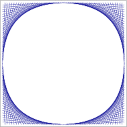
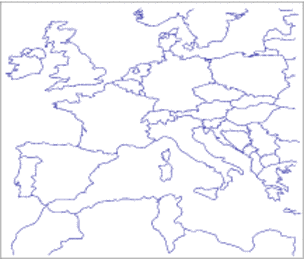

|
CGAL 4.13 - 2D Arrangements
|
|
CGAL 4.13 - 2D Arrangements
|
Given a set \( \cal C\) of planar curves, the arrangement \( \cal A(\cal C)\) is the subdivision of the plane into zero-dimensional, one-dimensional and two-dimensional cells, called vertices, edges and faces, respectively induced by the curves in \( \cal C\). Arrangements are ubiquitous in the computational-geometry literature and have many applications; see, e.g., [1], [5].
The curves in \( \cal C\) can intersect each other (a single curve may also be self-intersecting or may be comprised of several disconnected branches) and are not necessarily \( x\)-monotone.A continuous planar curve \( C\) is \( x\)-monotone if every vertical line intersects it at most once. For example, a non-vertical line segment is always \( x\)-monotone and so is the graph of any continuous function \( y = f(x)\). For convenience, we treat vertical line segments as weakly \( x\)-monotone, as there exists a single vertical line that overlaps them. A circle of radius \( r\) centered at \( (x_0, y_0)\) is not \( x\)-monotone, as the vertical line \( x = x_0\) intersects it at \( (x_0, y_0 - r)\) and at \( (x_0, y_0 + r)\). We construct a collection \( \cal C''\) of \( x\)-monotone subcurves that are pairwise disjoint in their interiors in two steps as follows. First, we decompose each curve in \( \cal C\) into maximal \( x\)-monotone subcurves (and possibly isolated points), obtaining the collection \( \cal C'\). Note that an \( x\)-monotone curve cannot be self-intersecting. Then, we decompose each curve in \( \cal C'\) into maximal connected subcurves not intersecting any other curve (or point) in \( \cal C'\). The collection \( \cal C''\) may also contain isolated points, if the curves of \( \cal C\) contain such points. The arrangement induced by the collection \( \cal C''\) can be conveniently embedded as a planar graph, whose vertices are associated with curve endpoints or with isolated points, and whose edges are associated with subcurves. It is easy to see that \( \cal A(\cal C) = \cal A(\cal C'')\). This graph can be represented using a doubly-connected edge list data-structure (Dcel for short), which consists of containers of vertices, edges and faces and maintains the incidence relations among these objects.
The main idea behind the Dcel data-structure is to represent each edge using a pair of directed halfedges, one going from the \( xy\)-lexicographically smaller (left) endpoint of the curve toward its the \( xy\)-lexicographically larger (right) endpoint, and the other, known as its twin halfedge, going in the opposite direction. As each halfedge is directed, we say it has a source vertex and a target vertex. Halfedges are used to separate faces, and to connect vertices (with the exception of isolated vertices, which are unconnected).
If a vertex \( v\) is the target of a halfedge \( e\), we say that \( v\) and \( e\) are incident to each other. The halfedges incident to a vertex \( v\) form a circular list oriented in a clockwise order around this vertex. (An isolated vertex has no incident halfedges.)
Each halfedge \( e\) stores a pointer to its incident face, which is the face lying to its left. Moreover, every halfedge is followed by another halfedge sharing the same incident face, such that the target vertex of the halfedge is the same as the source vertex of the next halfedge. The halfedges are therefore connected in circular lists, and form chains, such that all edges of a chain are incident to the same face and wind along its boundary. We call such a chain a connected component of the boundary (or CCB for short).
The unique CCB of halfedges winding in a counterclockwise orientation along a face boundary is referred to as the outer CCB of the face. For the time being let us consider only arrangements of bounded curves, such that exactly one unbounded face exists in every arrangement. The unbounded face does not have an outer boundary. Any other connected component of the boundary of the face is called a hole (or inner CCB), and can be represented as a circular chain of halfedges winding in a clockwise orientation around it. Note that a hole does not necessarily correspond to a single face, as it may have no area, or alternatively it may consist of several connected faces. Every face can have several holes contained in its interior (or no holes at all). In addition, every face may contain isolated vertices in its interior. See Figure 34.1 for an illustration of the various Dcel features. For more details on the Dcel data structure see [3] Chapter 2.
The \( x\)-monotone curves of an arrangement are embedded in an rectangular two-dimensional area called the parameter space.The term parameter space stems from a major extension the arrangement package is going through to support arrangements embedded on certain two-dimensional parametric surfaces in three-dimensions (or higher). The parameter space is defined as \( X \times Y\), where \( X\) and \( Y\) are open, half-open, or closed intervals with endpoints in the compactified real line \( \mathbb{R} \cup \{-\infty,+\infty\}\). Let \( b_l\), \( b_r\), \( b_b\), and \( b_t\) denote the endpoints of \( X\) and \( Y\), respectively. We typically refer to these values as the left, right, bottom, and top sides of the boundary of the parameter space. If the parameter space is, for example, the entire compactified plane, which is currently the only option supported by the package, \( b_l = b_b = -\infty\) and \( b_r = b_t = +\infty\).
The rest of this chapter is organized as follows: In Section The Main Arrangement Class we review in detail the interface of the Arrangement_2 class-template, which is the central component in the arrangement package. In Section Issuing Queries on an Arrangement we show how queries on an arrangement can be issued. In Section Free Functions in the Arrangement Package we review some important free (global) functions that operate on arrangements, the most important ones being the free insertion-functions. Section Traits Classes contains detailed descriptions of the various geometric traits classes included in the arrangement package. Using these traits classes it is possible to construct arrangements of different families of curves. In Section The Notification Mechanism we review the notification mechanism that allows external classes to keep track of the changes that an arrangement instance goes through. Section Extending the DCEL explains how to extend the Dcel records, to store extra data with them, and to efficiently update this data. In Section Overlaying Arrangements we introduce the fundamental operation of overlaying two arrangements. Section Storing the Curve History describes the Arrangement_with_history_2 class-template that extends the arrangement by storing additional history records with its curves. Finally, in Section Input/Output Streams we review the arrangement input/output functions.
The class Arrangement_2<Traits,Dcel> is the main class in the arrangement package. It is used to represent planar arrangements and it provides the interface needed to construct them, traverse them, and maintain them. An arrangement is defined by a geometric traits class that determines the family of planar curves that form the arrangement, and a Dcel class, which represents the topological structure of the planar subdivision. It supplies a minimal set of geometric operations (predicates and constructions) required to construct and maintain the arrangement and to operate on it.
The design of the arrangement package is guided by the need to separate between the representation of the arrangements and the various geometric algorithms that operate on them, and by the need to separate between the topological and geometric aspects of the planar subdivision. The separation is exhibited by the two template parameters of the Arrangement_2 template:
The Traits template-parameter should be instantiated with a model of the ArrangementBasicTraits_2 concept and optionally additional geometry traits concepts. A model of the ArrangementBasicTraits_2 concept defines the types of \( x\)-monotone curves and two-dimensional points, namely X_monotone_curve_2 and Point_2, respectively, and supports basic geometric predicates on them.
In the first sections of this chapter we always use Arr_segment_traits_2 as our traits class, to construct arrangements of line segments. However, the arrangement package contains several other traits classes that can handle other types of curves, such as polylines (continuous piecewise-linear curves), conic arcs, and arcs of rational functions. We exemplify the usage of these traits classes in Section Traits Classes.
Dcel template-parameter should be instantiated with a class that is a model of the ArrangementDcel concept. The value of this parameter is Arr_default_dcel<Traits> by default. However, in many applications it is necessary to extend the Dcel features; see Section Extending the DCEL for further explanations and examples. 
The simple program listed below constructs a planar map of three line segments forming a triangle. The constructed arrangement is instantiated with the Arr_segment_traits_2 traits class to handle segments only. The resulting arrangement consists of two faces, a bounded triangular face and the unbounded face. The program is not very useful as it is, since it ends immediately after the arrangement is constructed. We give more enhanced examples in the rest of this chapter.
The simplest and most fundamental arrangement operations are the various traversal methods, which allow users to systematically go over the relevant features of the arrangement at hand.
As mentioned above, the arrangement is represented as a Dcel, which stores three containers of vertices, halfedges and faces. Thus, the Arrangement_2 class supplies iterators for these containers. For example, the methods vertices_begin() and vertices_end() return Arrangement_2::Vertex_iterator objects that define the valid range of arrangement vertices. The value type of this iterator is Arrangement_2::Vertex. Moreover, the vertex-iterator type is equivalent to Arrangement_2::Vertex_handle, which serves as a pointer to a vertex. As we show next, all functions related to arrangement features accept handle types as input parameters and return handle types as their output.
In addition to the iterators for arrangement vertices, halfedges and faces, the arrangement class also provides edges_begin() and edges_end() that return Arrangement_2::Edge_iterator objects for traversing the arrangement edges. Note that the value type of this iterator is Arrangement_2::Halfedge, representing one of the twin halfedges that represent the edge.
All iterator, circulatorA circulator is used to traverse a circular list, such as the list of halfedges incident to a vertex - see below. and handle types also have non-mutable (const) counterparts. These non-mutable iterators are useful to traverse an arrangement without changing it. For example, the arrangement has a non-constant member function called vertices_begin() that returns a Vertex_iterator object and another const member function that returns a Vertex_const_iterator object. In fact, all methods listed in this section that return an iterator, a circulator or a handle have non-mutable counterparts. It should be noted that, for example, Vertex_handle can be readily converted into a Vertex_const_handle, but not vice-verse.
Conversion of a non-mutable handle to a corresponding mutable handle are nevertheless possible, and can be performed using the static function Arrangement_2::non_const_handle() (see, e.g., Section Point-Location Queries). There are three variant of this function, one for each type of handle.
A vertex is always associated with a geometric entity, namely with a Point_2 object, which can be obtained by the point() method of the Vertex class nested within Arrangement_2.
The is_isolated() method determines whether a vertex is isolated or not. Recall that the halfedges incident to a non-isolated vertex, namely the halfedges that share a common target vertex, form a circular list around this vertex. The incident_halfedges() method returns a circulator of type Arrangement_2::Halfedge_around_vertex_circulator that enables the traversal of this circular list in a clockwise direction. The value type of this circulator is Halfedge.
The following function prints all the neighbors of a given arrangement vertex (assuming that the Point_2 type can be inserted into the standard output using the << operator). The arrangement type is the same as in the simple example above.
In case of an isolated vertex, it is possible to obtain the face that contains this vertex using the face() method.
Each arrangement edge, realized as a pair of twin halfedges, is associated with an X_monotone_curve_2 object, which can be obtained by the curve() method of the Halfedge class nested in the Arrangement_2 class.
The source() and target() methods return handles to the halfedge source and target vertices respectively. We can obtain a handle to the twin halfedge using the twin() method. From the definition of halfedges, it follows that if he is a halfedge handle, then:
he->curve() is equivalent to he->twin()->curve(), he->source() is equivalent to he->twin()->target(), and he->target() is equivalent to he->twin()->source(). Every halfedge has an incident face that lies to its left, which can be obtained by the face() method. Recall that a halfedge is always one link in a connected chain of halfedges that share the same incident face, known as a CCB. The prev() and next() methods return handles to the previous and next halfedges in the CCB respectively.
As the CCB is a circular list of halfedges, it is only natural to traverse it using a circulator. The ccb() method returns a Arrangement_2::Ccb_halfedge_circulator object for the halfedges along the CCB.
The function print_ccb() listed below prints all \( x\)-monotone curves along a given CCB (assuming that the Point_2 and the X_monotone_curve_2 types can be inserted into the standard output using the << operator).
An arrangement of bounded curves always has a single unbounded face. The function unbounded_face() returns a handle to this face. (Note that an empty arrangement contains nothing but the unbounded face.)
Given a Face object, we can use the is_unbounded() method to determine whether it is unbounded. Bounded faces have an outer CCB, and the outer_ccb() method returns a circulator for the halfedges along this CCB. Note that the halfedges along this CCB wind in a counterclockwise orientation around the outer boundary of the face.
A face can also contain disconnected components in its interior, namely holes and isolated vertices:
holes_begin() and holes_end() methods return Arrangement_2::Hole_iterator iterators that define the range of holes inside the face. The value type of this iterator is Ccb_halfedge_circulator, defining the CCB that winds in a clockwise orientation around a hole. isolated_vertices_begin() and isolated_vertices_end() methods return Arrangement_2::Isolated_vertex_iterator iterators that define the range of isolated vertices inside the face. The value type of this iterator is Vertex. The function print_face() listed below prints the outer and inner boundaries of a given face, using the function print_ccb(), which was introduced in the previous subsection.
The function listed below prints the current setting of a given arrangement. This concludes the preview of the various traversal methods.The file arr_print.h, which can be found under the examples folder, includes this function and the rest of the functions listed in this section. Over there they are written in a more generic fashion, where the arrangement type serves as a template parameter for these functions, so different instantiations of the Arrangement_2<Traits,Dcel> template can be provided to the same function templates.
In this section we review the various member functions of the Arrangement_2 class that allow users to modify the topological structure of the arrangement by introducing new edges or vertices, modifying them, or removing them.
The arrangement member-functions that insert new curves into the arrangement, thus enabling the construction of a planar subdivision, are rather specialized, as they require a-priori knowledge on the location of the inserted curve. Indeed, for most purposes it is more convenient to construct an arrangement using the free (global) insertion-functions.
The most important functions that allow users to modify the arrangement, and perhaps the most frequently used ones, are the specialized insertion functions of \( x\)-monotone curves whose interior is disjoint from any other curve in the existing arrangement and do not contain any vertex of the arrangement. In addition, these function require that the location of the curve in the arrangement is known.
The motivation behind these rather harsh restrictions on the nature of the inserted curves is the decoupling of the topological arrangement representation from the various algorithms that operate on it. While the insertion of an \( x\)-monotone curve whose interior is disjoint from all existing arrangement features is quite straightforward (as we show next), inserting curves that intersect with the curves already inserted into the arrangement is much more complicated and requires the application of non-trivial geometric algorithms. These insertion operations are therefore implemented as free functions that operate on the arrangement and the inserted curve(s); see Section Free Functions in the Arrangement Package for more details and examples. You may skip to Section Free Functions in the Arrangement Package, and return to this subsection at a later point in time.
When an \( x\)-monotone curve is inserted into an existing arrangement, such that the interior of this curve is disjoint from any arrangement feature, only the following three scenarios are possible, depending on the status of the endpoints of the inserted subcurve:

The Arrangement_2 class offers insertion functions named insert_in_face_interior(), insert_from_left_vertex(), insert_from_right_vertex() and insert_at_vertices() that perform the special insertion procedures listed above. The first function accepts an \( x\)-monotone curve \( c\) and an arrangement face \( f\) that contains this curve in its interior. The other functions accept an \( x\)-monotone curve \( c\) and handles to the existing vertices that correspond to the curve endpoint(s). Each of the four functions returns a handle to one of the twin halfedges that have been created, where:
insert_in_face_interior(c, f) returns a halfedge directed from the vertex corresponding to the left endpoint of c toward the vertex corresponding to its right endpoint. insert_from_left_vertex(c, v) and insert_from_right_vertex(c, v) returns a halfedge whose source is the vertex \( v\) that and whose target is the new vertex that has just been created. insert_at_vertices(c, v1, v2) returns a halfedge directed from \( v_1\) to \( v_2\). edge_insertion.cpp. The arrows mark the direction of the halfedges returned from the various insertion functions. The following program demonstrates the usage of the four insertion functions. It creates an arrangement of five line segments, as depicted in Figure 34.2.Notice that in all figures in the rest of this chapter the coordinate axes are drawn only for illustrative purposes and are not part of the arrangement. As the arrangement is very simple, we use the simple Cartesian kernel of CGAL with integer coordinates for the segment endpoints. We also use the Arr_segment_traits_2 class that enables the efficient maintenance of arrangements of line segments; see more details on this traits class in Section Traits Classes. This example, as many others in this chapter, uses some print-utility functions from the file print_arr.h; these functions are also listed in Section Traversing the Arrangement.
File Arrangement_on_surface_2/edge_insertion.cpp
Observe that the first line segment is inserted in the interior of the unbounded face. The other line segments are inserted using the vertices created by the insertion of previous segments. The resulting arrangement consists of three faces, where the two bounded faces form together a hole in the unbounded face.
Isolated points are in general simpler geometric entities than curves and indeed the member functions that manipulate them are easier to understand.
The function insert_in_face_interior(p, f) inserts an isolated point \( p\), located in the interior of a given face \( f\), into the arrangement and returns a handle to the arrangement vertex it has created and associated with \( p\). Naturally, this function has a precondition that \( p\) is really an isolated point, namely it does not coincide with any existing arrangement vertex and does not lie on any edge. As mentioned in Section Traversing the Arrangement, it is possible to obtain the face containing an isolated vertex handle \( v\) by calling v->face().
The function remove_isolated_vertex(v) receives a handle to an isolated vertex and removes it from the arrangement.

isolated_vertices.cpp. The vertices \( u_2\) and \( u_3\) are eventually removed from the arrangement. The following program demonstrates the usage of the arrangement member-functions for manipulating isolated vertices. It first inserts three isolated vertices located inside the unbounded face, then it inserts four line segments that form a rectangular hole inside the unbounded face (see Figure 34.3 for an illustration). Finally, it traverses the vertices and removes those isolated vertices that are still contained in the unbounded face ( \( u_2\) and \( u_3\) in this case):
File Arrangement_on_surface_2/isolated_vertices.cpp
In the previous subsection we showed how to introduce new isolated vertices in the arrangement. But how does one create a vertex that lies on an existing arrangement edge (more precisely, on an \( x\)-monotone curve that is associated with an arrangement edge)?
It should be noted that such an operation involves the splitting of a curve at a given point in its interior, while the traits class used by Arrangement_2 does not necessarily have the ability to perform such a split operation. However, if users have the ability to split an \( x\)-monotone curve into two at a given point \( p\) (this is usually the case when employing a more sophisticated traits class; see Section Traits Classes for more details) they can use the split_edge(e, c1, c2) function, were \( c_1\) and \( c_2\) are the two subcurves resulting from splitting the \( x\)-monotone curve associated with the halfedge \( e\) at some point (call it \( p\)) in its interior. The function splits the halfedge pair into two pairs, both incident to a new vertex \( v\) associated with \( p\), and returns a handle to a halfedge whose source equals \( e\)'s source vertex and whose target is the new vertex \( v\).
The reverse operation is also possible. Suppose that we have a vertex \( v\) of degree \( 2\), whose two incident halfedges, \( e_1\) and \( e_2\), are associated with the curves \( c_1\) and \( c_2\). Suppose further that it is possible to merge these two curves into a single continuous \( x\)-monotone curve \( c\). Calling merge_edge(e1, e2, c) will merge the two edges into a single edge associated with the curve \( c\), essentially removing the vertex \( v\) from the arrangement.
Finally, the function remove_edge(e) removes the edge \( e\) from the arrangement. Note that this operation is the reverse of an insertion operation, so it may cause a connected component to split into two, or two faces to merge into one, or a hole to disappear. By default, if the removal of e causes one of its end-vertices to become isolated, we remove this vertex as well. However, users can control this behavior and choose to keep the isolated vertices by supplying additional Boolean flags to remove_edge() indicating whether the source and the target vertices are to be removed should they become isolated.
edge_manipulation.cpp. Note that the edges \( e_7\) and \( e_8\) and the vertices \( w_1\) and \( w_2\), introduced in step (b) are eventually removed in step (c). In the following example program we show how the edge-manipulation functions can be used. The program works in three steps, as demonstrated in Figure 34.4. Note that here we still stick to integer coordinates, but as we work on a larger scale we use an unbounded integer number-type (in this case, the Gmpz type taken from the Gmp library) instead of the built-in int type.As a rule of thumb, one can use a bounded integer type for representing line segments whose coordinates are bounded by \( \lfloor\sqrt[3]{M}\rfloor\), where \( M\) is the maximal representable integer value. This guarantees that no overflows occur in the computations carried out by the traits class, hence all traits-class predicates always return correct results. In case the Gmp library is not installed (as indicated by the CGAL_USE_GMP flag defined in CGAL/basic.h), we use MP_Float, a number-type included in CGAL's support library that is capable of storing floating-point numbers with unbounded mantissa. We also use the standard Cartesian kernel of CGAL as our kernel. This is recommended when the kernel is instantiated with a more complex number type, as we demonstrate in other examples in this chapter.
File Arrangement_on_surface_2/edge_manipulation.cpp
Note how we use the halfedge handles returned from split_edge() and merge_edge(). Also note the insertion of the isolated vertex \( v_6\) located inside the triangular face (the incident face of \( e_7\)). This vertex seizes from being isolated, as it is gets connected to other vertices.
In this context, we should mention the two member functions modify_vertex(v, p), which sets \( p\) to be the point associated with the vertex \( v\), and modify_edge(e, c), which sets \( c\) to be the \( x\)-monotone curve associated with the halfedge \( e\). These functions have preconditions that \( p\) is geometrically equivalent to v->point() and \( c\) is equivalent to e->curve() (i.e., the two curves have the same graph), respectively, to avoid the invalidation of the geometric structure of the arrangement. At a first glance it may seen as these two functions are of little use. However, we should keep in mind that there may be extraneous data (probably non-geometric) associated with the point objects or with the curve objects, as defined by the traits class. With these two functions we can modify this data; see more details in Section Traits Classes.
In addition, we can use these functions to replace a geometric object (a point or a curve) with an equivalent object that has a more compact representation. For example, we can replace the point \( (\frac{20}{40}, \frac{99}{33})\) associated with some vertex \( v\), by \( (\frac{1}{2}, 3)\).
Assume that the specialized insertion function insert_from_left_vertex(c,v) is invoked for a curve \( c\), whose left endpoint is already associated with a non-isolated vertex \( v\). Namely, \( v\) has already several incident halfedges. It is necessary in this case to locate the exact place for the new halfedge mapped to the inserted new curve \( c\) in the circular list of halfedges incident to \( v\). More precisely, it is sufficient to locate one of the halfedges pred directed toward \( v\) such that \( c\) is located between pred and pred->next() in clockwise order around \( v\), in order to complete the insertion (see Figure 34.2 for an illustration). This may take \( O(d)\) time where \( d\) is the degree of the vertex. However, if the halfedge pred is known in advance, the insertion can be carried out in constant time.
The Arrangement_2 class provides the advanced versions of the specialized insertion functions for a curve \( c\) - namely we have insert_from_left_vertex(c,pred) and insert_from_right_vertex(c,pred) that accept a halfedge pred as specified above, instead of a vertex \( v\). These functions are more efficient, as they take constant time and do not perform any geometric operations. Thus, they should be used when the halfedge pred is known. In case that the vertex \( v\) is isolated or that the predecessor halfedge for the new inserted curve is not known, the simpler versions of these insertion functions should be used.
Similarly, there exist two overrides of the insert_at_vertices() function: One that accept the two predecessor halfedges around the two vertices \( v_1\) and \( v_2\) that correspond to the curve endpoints, and one that accepts a handle for one vertex and a predecessor halfedge around the other vertex.
special_edge_insertion.cpp. Note that \( p_0\) is initially inserted as an isolated point and later on connected to the other four vertices. The following program shows how to construct the arrangement depicted in Figure 34.5 using the specialized insertion functions that accept predecessor halfedges:
File Arrangement_on_surface_2/special_edge_insertion.cpp
It is possible to perform even more refined operations on an Arrangement_2 instance given specific topological information. As most of these operations are very fragile and perform no precondition testing on their input in order to gain efficiency, they are not included in the public interface of the arrangement class. Instead, the Arr_accessor<Arrangement> class allows access to these internal arrangement operations - see more details in the Reference Manual.
One of the most important query types defined on arrangements is the point-location query: Given a point, find the arrangement cell that contains it. Typically, the result of a point-location query is one of the arrangement faces, but in degenerate situations the query point can be located on an edge or it may coincide with a vertex.
Point-location queries are common in many applications, and also play an important role in the incremental construction of arrangements (and more specifically in the free insertion-functions described in Section Free Functions in the Arrangement Package). Therefore, it is crucial to have the ability to answer such queries effectively.
The Arrangement_2 class template does not support point-location queries directly, as the arrangement representation is decoupled from the geometric algorithms that operate on it. The 2D Arrangements package includes a set of classe templates that are capable of answering such queries; all are models of the concept ArrangementPointLocation_2. Each model employs a different algorithm or strategy for answering queries. A model of this concept must define the locate() member function, which accepts an input query-point and returns an object that represents the arrangement cell that contains this point. This object is is type Arr_point_location_result<Arrangement_2>::Typea discriminated union container of the bounded types Vertex_const_handle, Halfedge_const_handle, or Face_const_handle. Depending on whether the query point is located inside a face, on an edge, or on a vertex, the appropriate handle can be obtained with value retrieval by boost::get as demonstrated in the example below.
Note that the handles returned by the locate() functions are non-mutable (const). If necessary, such handles may be cast to mutable handles using the non_const_handle() methods Arrangement_2::non_const_handle() provided by the Arrangement_2 class.
An object pl of any point-location class must be attached to an Arrangement_2 object arr before it is used to answer point-location queries on arr. This attachment can be performed when pl is constructed or at a later time using the pl.init(arr) call.
The function template listed below accepts a point-location object, the type of which is a model of the ArrangementPointLocation_2 concept, and a query point. The function template issues a point-location query for the given point, and prints out the result. It is defined in the header file point_location_utils.h.
The function template locate_point() calls an instance of the function template print_point_location(), which inserts the result of the query into the standard output-stream. It is listed below, and defined in the header file point_location_utils.h. Observe how the function boost::get() is used to cast the resulting object into a handle to an arrangement feature. The point-location object pl is assumed to be already attached to an arrangement.
Each of the various point-location class templates employs a different algorithm or strategyThe term strategy is borrowed from the design-pattern taxonomy [4], Chapter 5. A strategy provides the means to define a family of algorithms, each implemented by a separate class. All classes that implement the various algorithms are made interchangeable, letting the algorithm in use vary according to the user choice. for answering queries:
Arr_naive_point_location<Arrangement> employs the naive strategy. It locates the query point naively, exhaustively scanning all arrangement cells.
Arr_walk_along_line_point_location<Arrangement> employs the walk-along-a-line (or walk for short) strategy. It simulates a traversal, in reverse order, along an imaginary vertical ray emanating from the query point. It starts from the unbounded face of the arrangement and moves downward toward the query point until it locates the arrangement cell containing it.
Arr_landmarks_point_location<Arrangement,Generator> uses a set of landmark points, the location of which in the arrangement is known. It employs the landmark strategy. Given a query point, it uses a nearest-neighbor search-structure (a Kd-tree is used by default) to find the nearest landmark, and then traverses the straight-line segment connecting this landmark to the query point.
There are various ways to select the landmark set in the arrangement. The selection is governed by the Generator template parameter. The default generator class, namely Arr_landmarks_vertices_generator, selects all the vertices of the attached arrangement as landmarks. Additional generators that select the set in other ways, such as by sampling random points or choosing points on a grid, are also available; see the Reference Manual for more details.
The landmark strategy requires that the type of the attached arrangement be an instance of the Arrangement_2<Traits,Dcel> class template, where the Traits parameter is substituted with a geometry-traits class that models the ArrangementLandmarkTraits_2 concept, which refines the basic ArrangementBasicTraits_2 concept; see Section The Landmarks Concept for details. Most traits classes included in the 2D Arrangement package are models of this refined concept.
Arr_trapezoid_ric_point_location<Arrangement> implements an improved variant of Mulmuley's point-location algorithm [8]; see also [3], Chapter 6. The (expected) query-time is logarithmic. The arrangement faces are decomposed into simpler cells each of constant complexity, known as pseudo-trapezoids, and a search structure (a directed acyclic graph) is constructed on top of these cells, facilitating the search of the pseudo trapezoid (hence the arrangement cell) containing a query point in expected logarithmic time. The trapezoidal map and the search structure are built by a randomized incremental construction algorithm (RIC).
The first two strategies do not require any extra data. The class templates that implement them store a pointer to an arrangement object and operate directly on it. Attaching such point-location objects to an existing arrangement has virtually no running-time cost at all, but the query time is linear in the size of the arrangement (the performance of the walk strategy is much better in practice, but its worst-case performance is linear). Using these strategies is therefore recommended only when a relatively small number of point-location queries are issued by the application, or when the arrangement is constantly changing (That is, changes in the arrangement structure are more frequent than point-location queries).
On the other hand, the landmarks and the trapezoid RIC strategies require auxiliary data structures on top of the arrangement, which they need to construct once they are attached to an arrangement object and need to keep up-to-date as this arrangement changes. The data structure needed by the landmarks strategy can be constructed in \( O(N \log N) \) time, where \( N \) is the overall number of edges in the arrangement, but the constant hidden in the \( O() \) notation for the trapezoidal map RIC strategy is much larger. Thus, construction needed by the landmark algorithm is in practice significantly faster than the construction needed by the trapezoidal map RIC strategy. In addition, although both resulting data structures are asymptotically linear in size, using a Kd-tree as the nearest-neighbor search-structure that the landmark algorithm stores significantly reduces memory consumption. The trapezoidal map RIC algorithm has expected logarithmic query time, while the query time for the landmark strategy may be as large as linear. In practice however, the query times of both strategies are competitive. For a detailed experimental comparison see [6].
Updating the auxiliary data structures of the trapezoidal map RIC algorithm is done very efficiently. On the other hand, updating the nearest-neighbor search-structure of the landmark algorithm may consume more time when the arrangement changes frequently, especially when a Kd-tree is used, as it must be rebuilt each time the arrangement changes. It is therefore recommended that the Arr_landmarks_point_location class template be used when the application frequently issues point-location queries on an arrangement that only seldom changes. If the arrangement is more dynamic and is frequently going through changes, the Arr_trapezoid_ric_point_location class template should be the selected point-location strategy.
point_location_example.cpp, vertical_ray_shooting.cpp, and batched_point_location.cpp. The arrangement vertices are drawn as small discs, while the query points \( q_1, \ldots, q_6\) are marked with crosses. The program listed below constructs a simple arrangement of five line segments that form a pentagonal face, with a single isolated vertex in its interior, as depicted in Figure 34.6. Notice that we use the same arrangement structure in the next three example programs. The arrangement construction is performed by the function construct_segment_arr() defined in the header file point_location_utils.h. (Its listing is omitted here.) The program employs the naive and the landmark strategies to issue several point-location queries on this arrangement.
File Arrangement_on_surface_2/point_location_example.cpp
Note that the program uses the locate_point() function template to locate a point and nicely print the result of each query; see here.
Another important query issued on arrangements is the vertical ray-shooting query: Given a query point, which arrangement feature do we encounter by a vertical ray shot upward (or downward) from this point? In the general case the ray hits an edge, but it is possible that it hits a vertex, or that the arrangement does not have any vertex or edge lying directly above (or below) the query point.
All point-location classes listed in the previous section are also models of the ArrangementVerticalRayShoot_2 concept. That is, they all have member functions called ray_shoot_up(q) and ray_shoot_down(q) that accept a query point q. These functions output an object of type type Arr_point_location_result<Arrangement_2>::Typea discriminated union container of the bounded types Vertex_const_handle, Halfedge_const_handle, or Face_const_handle. The latter type is used for the unbounded face of the arrangement, in case there is no edge or vertex lying directly above (or below) q.
The function template vertical_ray_shooting_query() listed below accepts a vertical ray-shooting object, the type of which models the ArrangementVerticalRayShoot_2 concept. It exports the result of the upward vertical ray-shooting operation from a given query point to the standard output-stream. The ray-shooting object vrs is assumed to be already attached to an arrangement. The function template is defined in the header file `point_location_utils.h.
The program below uses the function template listed above to perform vertical ray-shooting queries on an arrangement. The arrangement and the query points are exactly the same as in point_location.cpp; see Figure 34.6.
File Arrangement_on_surface_2/vertical_ray_shooting.cpp
The number type we use in this example is CGAL's built-in MP_Float type, which is a floating-point number with an unbounded mantissa and a 32-bit exponent. It supports construction from an integer or from a machine float or double and performs additions, subtractions and multiplications in an exact number.
Suppose that at a given moment our application has to issue a relatively large number \( m\) of point-location queries on a specific arrangement object. Naturally, It is possible to define a point-location object and use it to issue separate queries on the arrangement. However, as explained in Section Point-Location Queries choosing a simple point-location strategy (either the naive or the walk strategy) means inefficient queries, while the more sophisticated strategies need to construct auxiliary structures that incur considerable overhead in running time.
Alternatively, the 2D Arrangement package includes a free locate() function that accepts an arrangement and a range of query points as its input and sweeps through the arrangement to locate all query points in one pass. The function outputs the query results as pairs, where each pair consists of a query point and a discriminated union container, which represents the cell containing the point; see Section Point-Location Queries. The output pairs are sorted in increasing $xy$-lexicographical order of the query point.
The batched point-location operation is carried out by sweeping the arrangement. Thus, it takes \( O((m+N)\log{(m+N)}) \) time, where \( N \) is the number of edges in the arrangement. Issuing separate queries exploiting a point-location strategy with logarithmic query time per query, such as the trapezoidal map RIC strategy (see Section Choosing a Point-Location Strategy), is asymptotically more efficient. However, experiments show that when the number \( m \) of point-location queries is of the same order of magnitude as \( N\), the batched point-location operation is more efficient in practice. One of the reasons for the inferior performance of the alternative (asymptotically faster) procedures is the necessity to construct and maintain complex additional data structures.
The program below issues a batched point-location query, which is essentially equivalent to the six separate queries performed in point_location_example.cpp; see Section Point-Location Queries.
File Arrangement_on_surface_2/batched_point_location.cpp
In Section The Main Arrangement Class we reviewed in details the Arrangement_2 class, which represents two-dimensional subdivisions induced by planar curves, and mentioned that its interface is minimal in the sense that the member functions hardly perform any geometric algorithms and are mainly used for maintaining the topological structure of the subdivision. In this section we explain how to utilize the free (global) functions that operate on arrangements. The implementation of these operations typically require non-trivial geometric algorithms or load some extra requirements on the traits class.
In Section The Main Arrangement Class we explained how to construct arrangements of \( x\)-monotone curves that are pairwise disjoint in their interior, when the location of the segment endpoints in the arrangement is known. Here we relax this constraint, and allow the location of the inserted \( x\)-monotone curve endpoints to be arbitrary, as it may be unknown at the time of insertion. We retain, for the moment, the requirement that the interior of the inserted curve is disjoint from all existing arrangement edges and vertices.
The free function insert_non_intersecting_curve(arr, c, pl) inserts the \( x\)-monotone curve \( c\) into the arrangement arr, with the precondition that the interior of \( c\) is disjoint from all arr's existing edges and vertices. The third argument pl is a point-location object attached to the arrangement, which is used for performing the insertion. It locates both curve endpoints in the arrangement, where each endpoint is expected to either coincide with an existing vertex or lie inside a face. It is possible to invoke one of the specialized insertion functions (see Section The Main Arrangement Class), based on the query results, and insert \( c\) at its proper position.The insert_non_intersecting_curve() function, as all other functions reviewed in this section, is a function template, parameterized by an arrangement class and a point-location class (a model of the ArrangementPointLocation_2 concept). The insertion operation thus hardly requires any geometric operations on top on the ones needed to answer the point-location queries. Moreover, it is sufficient that the arrangement class is instantiated with a traits class that models the ArrangementBasicTraits_2 concept (or the ArrangementLandmarkTraits_2 concept, if the landmark point-location strategy is used), which does not have to support the computation of intersection points between curves.
The variant insert_non_intersecting_curve(arr, c) is also available. Instead of accepting a user-defined point-location object, it defines a local instance of the walk point-location class and uses it to insert the curve.
The insert_non_intersecting_curve() function is very efficient, but its preconditions on the input curves are still rather restricting. Let us assume that the arrangement is instantiated with a traits class that models the refined ArrangementXMonotoneTraits_2 concept and supports intersection computations (see Section Traits Classes for the exact details). Given an \( x\)-monotone curve, it is sufficient to locate its left endpoint in the arrangement and to trace its zone, namely the set of arrangement features crossing the curve, until the right endpoint is reached. Each time the new curve \( c\) crosses an existing vertex or an edge, the curve is split into subcurves (in the latter case, we have to split the curve associated with the existing halfedge as well) and associate new edges with the resulting subcurves. Recall that an edge is represented by a pair of twin halfedges, so we split it into two halfedge pairs.
The free function insert(arr, c, pl) performs this insertion operation. It accepts an \( x\)-monotone curve \( c\), which may intersect some of the curves already in the arrangement arr, and inserts it into the arrangement by computing its zone. Users may supply a point-location object pl, or use the default walk point-location strategy (namely, the variant insert(arr, c) is also available). The running-time of this insertion function is proportional to the complexity of the zone of the curve \( c\).
In some cases users may have a prior knowledge of the location of the left endpoint of the \( x\)-monotone curve c they wish to insert, so they can perform the insertion without issuing any point-location queries. This can be done by calling insert(arr, c, obj), where obj is an object represents the location of c's left endpoint in the arrangement - namely it wraps a Vertex_const_handle, a Halfedge_const_handle or a Face_const_handle (see also Section Point-Location Queries).
So far all our examples were of arrangements of line segments, where the Arrangement_2 template was instantiated with the Arr_segment_traits_2 class. In this case, the fact that insert() accepts an \( x\)-monotone curve does not seem to be a restriction, as all line segments are \( x\)-monotone (note that we consider vertical line segments to be weakly \( x\)-monotone).
Suppose that we construct an arrangement of circles. A circle is obviously not \( x\)-monotone, so we cannot insert it in the same way we inserted \( x\)-monotone curves. Note that a key operation performed by insert() is to locate the left endpoint of the curve in the arrangement. A circle, however, does not have any endpoints! However, it is possible to subdivide each circle into two \( x\)-monotone circular arcs (its upper half and its lower half) and to insert each \( x\)-monotone arc separately.
The free function insert() also supports general curve and not necessarily \( x\)-monotone curves. In this case it requires that the traits class used by the arrangement arr to be a model of the concept ArrangementTraits_2, which refines the ArrangementXMonotoneTraits_2 concept. It has to define an additional Curve_2 type (which may differ from the X_monotone_curve_2 type), and support the subdivision of curves of this new type into \( x\)-monotone curves (see the exact details in Section Traits Classes). The insert(arr, c, pl) function performs the insertion of the curve \( c\), which does not need to be \( x\)-monotone, into the arrangement by subdividing it (if needed) into \( x\)-monotone subcurves and inserting each one separately. Users may supply a point-location object pl, or use the default walk point-location strategy by calling insert(arr, c).
The arrangement class enables us to insert a point as an isolated vertex in a given face. The free function insert_point(arr, p, pl) inserts a vertex into arr that corresponds to the point p at an arbitrary location. It uses the point-location object pl to locate the point in the arrangement (by default, the walk point-location strategy is used), and acts according to the result as follows:
p is located inside a face, it is inserted as an isolated vertex inside this face. p lies on an edge, the edge is split to create a vertex associated with p. p coincides with an existing vertex and we are done. In all cases, the function returns a handle to the vertex associated with p.
The arrangement arr should be instantiated with a traits class that models the ArrangementXMonotoneTraits_2 concept, as the insertion operation may involve splitting curves.
incremental_insertion.cpp and aggregated_insertion.cpp. The segment endpoints are marked by black disks and the arrangement vertices that correspond to intersection points are marked by circles. The query point \( q\) is marked with a cross and the face that contains it is shaded. The program below constructs an arrangement of intersecting line-segments. We know that \( s_1\) and \( s_2\) do not intersect, so we use insert_non_intersecting_curve() to insert them into the empty arrangement. The rest of the segments are inserted using insert(). The resulting arrangement consists of \( 13\) vertices, \( 16\) edges, and \( 5\) faces, as can be seen in Figure 34.7.
In the earlier examples, all arrangement vertices corresponded to segment endpoints. In this example we have additional vertices that correspond to intersection points between two segments. The coordinates of these intersection points are rational numbers, if the input coordinates are rational (or integer). Therefore, the Quotient<int> number type is used to represent the coordinates:
File Arrangement_on_surface_2/incremental_insertion.cpp
In this section we have described so far free functions that insert curves and points to a given arrangement. Now we will describe functions that don't insert curves or points to an arrangement nor do they change the arrangement, but they are closely related to the incremental insertion functions as they also use the zone algorithm.
The free function do_intersect() checks if a given curve or \( x\)-monotone curve intersects an existing arrangement's edges or vertices. If the give curve is not an \( x\)-monotone curve then the function subdivides the given curve into \( x\)-monotone subcurves and isolated vertices . Each subcurve is in turn checked for intersection. The function uses the zone algorithm to check if the curve intersects the arrangement. First, the curve's left endpoint is located. Then, its zone is computed starting from its left endpoint location. The zone computation terminates when an intersection with an arrangement's edge/vertex is found or when the right endpoint is reached. A given point-location object is used for locating the left endpoint of the given curve in the existing arrangement. By default, the function uses the "walk along line" point-location strategy - namely an instance of the class Arr_walk_along_line_point_location. If the given curve is \( x\)-monotone then the traits class must model the ArrangementXMonotoneTraits_2 concept. If the curve is not \( x\)-monotone curve then the traits class must model the ArrangementTraits_2 concept.
The zone() function computes the zone of a given \( x\)-monotone curve in a given arrangement. Meaning, it outputs all the arrangement's elements (vertices, edges and faces) that the \( x\)-monotone curve intersects in the order that they are discovered when traversing the \( x\)-monotone curve from left to right. The function uses a given point-location object to locate the left endpoint of the given \( x\)-monotone curve. By default, the function uses the "walk along line" point-location strategy. The function requires that the traits class will model the ArrangementXMonotoneTraits_2 concept.
Let us assume that we have to insert a set of \( m\) input curves into an arrangement. It is possible to do this incrementally, inserting the curves one by one, as shown in the previous section. However, the arrangement package provides three free functions that aggregately insert a range of curves into an arrangement:
insert_non_intersecting_curves(arr, begin, end) inserts a range of \( x\)-monotone curves given by the input iterators [begin, end) into an arrangement arr. The \( x\)-monotone curves should be pairwise disjoint in their interior and also interior-disjoint from all existing edges and vertices of arr. insert(arr, begin, end) inserts a range of general (not necessarily \( x\)-monotone) curves of type Curve_2 or X_monotone_curve_2 that may intersect one another, given by the input iterators [begin, end), into the arrangement arr. We distinguish between two cases: (i) The given arrangement arr is empty (has only an unbounded face), so we have to construct it from scratch. (ii) We have to insert \( m\) input curves to a non-empty arrangement arr.
In the first case, we sweep over the input curves, compute their intersection points and construct the Dcel that represents their planar arrangement. This process is performed in \( O\left((m + k)\log m\right)\) time, where \( k\) is the total number of intersection points. The running time is asymptotically better than the time needed for incremental insertion, if the arrangement is relatively sparse (when \( k\) is bounded by \( \frac{m^2}{\log m}\)), but in practice it is recommended to use this aggregated construction process even for dense arrangements, since the sweep-line algorithm needs less geometric operations compared to the incremental insertion algorithms and hence typically runs much faster in practice.
Another important advantage the aggregated insertion functions have is that they do not issue point-location queries. Thus, no point-location object needs to be attached to the arrangement. As explained in Section Point-Location Queries, there is a trade-off between construction time and query time in each of the point-location strategies, which affects the running times of the incremental insertion process. Naturally, this trade-off is irrelevant in case of aggregated insertion as above.
The example below shows how to construct the arrangement of line segments depicted in Figure 34.7 and built incrementally in incremental_insertion.cpp, as shown in the previous section. We use the aggregated insertion function insert() as we deal with line segments. Note that no point-location object needs to be defined and attached to the arrangement:
File Arrangement_on_surface_2/aggregated_insertion.cpp
In case we have to insert a set of \( m\) curves into an existing arrangement, where we denote the number of edges in the arrangement by \( N\). As a rule of thumb, if \( m = o(\sqrt{N})\), we insert the curves one by one. For larger input sets, we use the aggregated insertion procedures.
global_insertion.cpp. The segments of \( {\mathcal S}_1\) are drawn in solid lines and the segments of \( {\mathcal S}_2\) are drawn in dark dashed lines. Note that the segment \( s\) (light dashed line) overlaps one of the segments in \( {\mathcal S}_1\). In the example below we aggregately construct an arrangement of a set \( {\mathcal S}_1\) containing five line segments. Then we insert a single segment using the incremental insertion function. Finally, we add a set \( {\mathcal S}_2\) with five more line segments in an aggregated fashion. Notice that the line segments of \( {\mathcal S}_1\) are pairwise interior-disjoint, so we use insert_non_intersecting_curves(). \( {\mathcal S}_2\) also contain pairwise interior-disjoint segments, but as they intersect the existing arrangement, we have to use insert() to insert them. Also note that the single segment \( s\) we insert incrementally overlaps an existing arrangement edge:
File Arrangement_on_surface_2/global_insertion.cpp
The number type used in the example above, Quotient<MP_Float>, is comprised of a numerator and a denominator of type MP_Float, namely floating-point numbers with unbounded mantissa. This number type is therefore capable of exactly computing the intersection points as long as the segment endpoints are given as floating-point numbers.
The free functions remove_vertex() and remove_edge() handle the removal of vertices and edges from an arrangement. The difference between these functions and the member functions of the Arrangement_2 template having the same name is that they allow the merger of two curves associated with adjacent edges to form a single edge. Thus, they require that the traits class that instantiates the arrangement instance is a model of the refined ArrangementXMonotoneTraits_2 concept (see Section Traits Classes).
The function remove_vertex(arr, v) removes the vertex v from the given arrangement arr, where v is either an isolated vertex or is a redundant vertex - namely, it has exactly two incident edges that are associated with two curves that can be merged to form a single \( x\)-monotone curve. If neither of the two cases apply, the function returns an indication that it has failed to remove the vertex.
The function remove_edge(arr, e) removes the edge e from the arrangement by simply calling arr.remove_edge(e) (see Section Modifying the Arrangement). In addition, if either of the end vertices of e becomes isolated or redundant after the removal of the edge, it is removed as well.
The following example demonstrates the usage of the free removal functions. In creates an arrangement of four line segment forming an H-shape with a double horizontal line. Then it removes the two horizontal edges and clears all redundant vertices, such that the final arrangement consists of just two edges associated with the vertical line segments:
File Arrangement_on_surface_2/global_removal.cpp
Previous sections dealt only with arrangements of line segments, namely of bounded curves. Such arrangements always have one unbounded face that contains all other arrangement features. This section explains how to construct arrangements of unbounded curves, such as lines and rays.
Consider the arrangement induced by the two lines \( y = x\) and \( y = -x\). These two lines intersect at the origin, such that the arrangement contains a single vertex \( v = (0,0)\), with four infinite rays emanating from it. Each ray corresponds to an arrangement edge, and these edges subdivide the plane into four unbounded faces. Consider a halfedge pair that represents one of the edges. The source vertex of one of these halfedges is \( v\) and its target is at infinity, while the other has its source at infinity and \( v\) is its target.
If e is an object of the nested type Arrangement_2::Halfedge, then the predicates e.source_at_infinity() and e.target_at_infinity() indicate whether the halfedge represents a curve with an infinite end. In general there is no need to access the source (or the target) of a halfedge if it lies at infinity, since this vertex is not associated with any valid point. Similarly, calling arr.number_of_vertices() for an arrangement object arr counts only the vertices associated with finite points, and ignores vertices at infinity (and the range [vertices_begin(), vertices_end()) contains only finite vertices). The method arr.number_of_vertices_at_infinity() counts the number of vertices at infinity.
As mentioned above, arrangements of unbounded curves usually have more than one unbounded face. The function arr.number_of_unbounded_faces() returns the number of unbounded arrangement faces (Thus, arr.number_of_faces() - arr.number_of_unbounded_faces() is the number of bounded faces). The functions arr.unbounded_faces_begin() and arr.unbounded_faces_end() return iterators of type Arrangement_2::Unbounded_face_iterator that specify the range of unbounded faces. Naturally, the value-type of this iterator is Arrangement_2::Face.
The specialized insertion functions listed in Section Inserting Non-Intersecting x-Monotone Curves can also be used for inserting \( x\)-monotone unbounded curves, provided that they are interior-disjoint from any subcurve that already exists in the arrangement. For example, if you wish to insert a ray \( r\) emanating from \( (0,0)\) in the direction of \( (1,0)\), to the arrangement of \( y = -x\) and \( y = x\), you can use the function arr.insert_from_left_vertex(), as the left endpoint of \( r\) is already associated with an arrangement vertex. Other edge-manipulation functions can also be applied on edges associated with unbounded curves.
The following example demonstrates the use of the insertion function for pairwise interior-disjoint unbounded curves. In this example we use the traits class Arr_linear_traits_2<Kernel> to instantiate the Arrangement_2 template. This traits class is capable of representing line segments as well as unbounded linear curves (namely lines and rays). Observe that objects of the type X_monotone_curve_2 defined by this traits class are constructible from Line_2, Ray_2, and Segment_2 objects, as defined in the instantiated kernel.
The first three curves are inserted using the special insertion functions for \( x\)-monotone curves whose location in the arrangement is known. Notice that inserting an unbounded curve in the interior of an unbounded face, or from an existing vertex that represents the bounded end of the curve, may cause an unbounded face to split (this is never the case when inserting a bounded curve - compare with Section Inserting Non-Intersecting x-Monotone Curves). Then, three additional rays are inserted incrementally, using the insertion function for \( x\)-monotone curves whose interior is disjoint from all arrangement features. Finally, the program prints the size of the arrangement (compare to the illustration in Figure 34.9) and the outer boundaries of its six unbounded faces:
File Arrangement_on_surface_2/unbounded_non_intersecting.cpp
In principle, all queries and operations that relate to arrangements of bounded curves can also be applied to arrangements of unbounded curves. For example, it is possible to issue point-location and vertical ray-shooting queries (see also Section Issuing Queries on an Arrangement) on arrangements of lines, where the only restriction is that the query point has finite coordinates.Currently, all point-location strategies except the trapezoidal RIC point-location strategy are capable of handling arrangements of unbounded curves.
In the following example we show how an arrangement of unbounded lines is utilized to solve the following problem: Given a set of points, does the set contain at least three collinear points? In this example a set of input points is read from a file. The file points.dat is used by default. It contains definitions of \( 100\) points randomly selected on the grid \( [-10000,10000]\times[-10000,10000]\). We construct an arrangement of the dual lines, where the line \( p^{*}\) dual to the point \( p = (p_x, p_y)\) is given by the equation \( y = p_x*x - p_y\), and check whether three (or more) of the dual lines intersect at a common point, by searching for a (dual) vertex, whose degree is greater than \( 4\). If such a vertex exists, then there are at least three dual lines that intersect at a common point, which implies that there are at least three collinear points.
File Arrangement_on_surface_2/dual_lines.cpp
Note that there are no three collinear points among the points defined in the input file points.dat. In the second part of the example the existence of collinearity is forced and verified as follows. A line dual to the midpoint of two randomly selected points is introduced, and inserted into the arrangement. This operation is followed by a test that verifies that a vertex of degree greater than \( 4\) exists. This implied that collinearity indeed exists as explained above.
Given a set \( \cal C\) of unbounded curves, a simple approach for representing the arrangement induced by \( \cal C\) would be to clip the unbounded curves using an axis-parallel rectangle that contains all finite curve endpoints and intersection points between curves in \( \cal C\). This process would result in a set \( \cal C\) of bounded curves (line segments if \( \cal C\) contains lines and rays), and it would be straightforward to compute the arrangement induced by this set. However, we would like to operate directly on the unbounded curves without having to preprocess them. Therefore, we use an implicit bounding rectangle embedded in the Dcel structure. Figure 34.10 shows the arrangement of four lines that subdivide the plane into eight unbounded faces and two bounded ones. Notice that in this case the unbounded faces have outer boundaries, and the halfedges along these outer CCBs are drawn as arrows. The bounding rectangle is drawn with a dashed line. The vertices \( v_1,v_2,\ldots,v_8\), which represent the unbounded ends of the four lines, and lie on the bounding rectangle, actually exist at infinity, and the halfedges connecting them are fictitious, and represent portions of the bounding rectangle. Note that the outer CCBs of the unbounded faces contain fictitious halfedges. The twins of these halfedges form together one connected component that corresponds to the entire bounding rectangle, which forms a single hole in a face \( f_0\). We say that \( f_0\) is fictitious, as it does not correspond to a real two-dimensional cell of the arrangement.
Observe that there are four extra vertices at infinity that do not lie on any curve; they are denoted as \( v_{\rm bl}, v_{\rm tl}, v_{\rm br}\), and \( v_{\rm tr}\), and represent the bottom-left, top-left, bottom-right, and top-right corners of the bounding rectangle, respectively. Similarly, there are fictitious halfedges that lie on the top, the bottom, the left, or the right edge of the bounding rectangle. When the arrangement is empty, there are exactly four pairs of fictitious halfedges, that divide the plane into two faces, namely a fictitious face lying outside of the bounding rectangle and a single unbounded face bounded by the bounding rectangle.
Summarizing the above, there are four types of arrangement vertices, which differ from one another by their location with respect to the bounding bounding rectangle:
A vertex (at infinity) of Type typeunbounded or Type typeunboundedvertical above always has three incident edges: one concrete edge that is associated with an unbounded portion of an \( x\)-monotone curve, and two fictitious edges connecting the vertex to its neighboring vertices at infinity. Fictitious vertices (of type 4 above) have exactly two incident edges. See Section Traits Classes on how the traits-class interface helps imposing the fact that we never have more than one curve incident to any true vertex at infinity.
The nested types defined in the Arrangement_2 class support the following methods, in addition to the ones listed in Section Traversing the Arrangement :
Vertex class provides three-valued predicates parameter_space_in_x() and parameter_space_in_y(), which return the location of the geometric embedding of the vertex in the parameter space. In particular, the former returns ARR_LEFT_BOUNDARY, ARR_INTERIOR, or ARR_RIGHT_BOUNDARY, and the latter returns ARR_BOTTOM_BOUNDARY, ARR_INTERIOR, or ARR_TOP_BOUNDARY. As the package currently supports only the case where the parameter space is the compactified plane, the former returns ARR_INTERIOR if the \( x\)-coordinate associated with the vertex is finite, ARR_LEFT_BOUNDARY if it is \( -\infty\), and ARR_RIGHT_BOUNDARY if it is \( \infty\). The latter returns ARR_INTERIOR if the \( y\)-coordinate associated with the vertex is finite, ARR_BOTTOM_BOUNDARY if it is \( -\infty\), and ARR_TOP_BOUNDARY if it is \( \infty\). The Boolean predicate is_at_open_boundary() is also provided. You can access the point associated with a vertex only if it is not a vertex at an open boundary (recall that a vertex at an open boundary is not associated with a Point_2 object). Halfedge class provides the Boolean predicate is_fictitious(). The \( x\)-monotone curve associated with a halfedge can be accessed by the curve() method only if the halfedge is not fictitious. Face class provides the Boolean predicate f.is_fictitious(). The method outer_ccb() has the precondition that the face is not fictitious. Note that non-fictitious unbounded faces always have valid CCBs (although this CCB may comprise only fictitious halfedge in case the arrangement contains only bounded curves). The method arr.number_of_edges() does not count the number of fictitious edges, (which is always arr.number_of_vertices_at_infinity() + 4), and the iterators returned by arr.edges_begin() and arr.edges_end() specify a range of non-fictitious edges. Similarly, arr.number_of_faces() does not count the fictitious face. However, the Ccb_halfedge_circulator of the outer boundary of an unbounded face or the Halfegde_around_vertex_circulator of a vertex at infinity do traverse fictitious halfedges. For example, it is possible to traverse the outer boundaries of the unbounded arrangement edges using the following procedure:
As mentioned in the introduction of this chapter, the traits class encapsulates the definitions of the geometric entities and implements the geometric predicates and constructions needed by the Arrangement_2 class and by its peripheral algorithms. We also mention throughout the chapter that there are different levels of requirements from the traits class, namely the traits class can model different concept refinement-levels.
A model of the basic concept, ArrangementBasicTraits_2, needs to define the types Point_2 and X_monotone_curve_2, where objects of the first type are the geometric mapping of arrangement vertices, and objects of the latter type are the geometric mapping of edges. Such a model has to support in addition the following set of operations:
Compare_x_2:Compare_xy_2:Construct_min_vertex_2,Construct_max_vertex_2:Compare_y_at_x_2:Compare_y_at_x_right_2:Equal_2:Is_vertical_2:Each model of the concept ArrangementBasicTraits_2 needs to define a tag named Has_left_category. It determines whether the traits class supports the following predicate:
Compare_y_at_x_left_2:This predicate is optional, as it can be answered using the other traits-class primitives, and we wish to alleviate the need to implement an extra method that is not absolutely necessary. However, as implementing the predicate directly may prove to be more efficient, the traits-class implementer may choose to provide it.
The basic set of predicates is sufficient for constructing arrangements of \( x\)-monotone curves that do not reach or approach the boundary of the parameter space. The nature of the input curves, i.e., whether some of them are expected to reach or approach the left, right, bottom, or top side of the boundary of the parameter space, must be conveyed by the traits class. This is done through the definition of four additional nested types, namely Left_side_category, Right_side_category, Bottom_side_category, and Top_side_category. Each of those types must be convertible to the type Arr_oblivious_side_tag for the class to be a model of the concept ArrangementBasicTraits_2.
The type of an arrangement associated with the landmark point-location strategy (see Section Point-Location Queries) must be an instance of the Arrangement_2<Traits,Dcel> class template, where the Traits parameter is substituted with a model of the concept ArrangementLandmarkTraits_2. (Naturally, it can also model either the ArrangementXMonotoneTraits_2 concept or the ArrangementTraits_2 concept.) The ArrangementLandmarkTraits_2 concept refines the two concepts ArrangementApproximateTraits_2 and ArrangementConstructXMonotoneCurveTraits_2. Each of these two concepts, in turn, refines the concept ArrangementBasicTraits_2.
A model of the ArrangementApproximateTraits_2 concept must define a fixed precision number type (typically the double-precision floating-point double) and support the additional below (in addition to fulfilling the requirements listed by the ArrangementBasicTraits_2 concept).
Approximate_2: p, approximate the \( x\) and \( y\)-coordinates of p using the fixed precision number type. We use this operation for approximate computationsthere are certain operations in the search for the location of the point that need not be exact and we can perform them faster than other operations. A model of the ArrangementConstructXMonotoneCurveTraits_2 concept support the operation below (in addition to fulfilling the requirements listed by the ArrangementBasicTraits_2 concept).
Construct_x_monotone_curve_2: A traits class that models the ArrangementXMonotoneTraits_2 concept, which refines the ArrangementBasicTraits_2 concept, has to support the following functions:
Intersection_2:Split_2:Are_mergeable_2:Merge_2:Using a model of the ArrangementXMonotoneTraits_2, it is possible to construct arrangements of sets of \( x\)-monotone curves (and points) that may intersect one another.
The concept ArrangementTraits_2 refines the ArrangementXMonotoneTraits_2 concept by adding the notion of a general, not necessarily \( x\)-monotone (and not necessarily continuous) curve. A model of this concept must define the Curve_2 type and support the subdivision of a curve into a set of continuous \( x\)-monotone curves and isolated points using the predicate Make_x_monotone_2. For example, the curve \( C:\ (x^2 + y^2)(x^2 + y^2 - 1) = 0\) is the unit circle (the loci of all points for which \( x^2 + y^2 = 1\)) with the origin \( (0,0)\) as a singular point in its interior. \( C\) should therefore be divided into two circular arcs (the upper part and the lower part of the unit circle) and a single isolated point.
Note that the refined model ArrangementTraits_2 is required only when using the free insert() functions (see Section Free Functions in the Arrangement Package), which accept a Curve_2 object in the incremental version, or a range of Curve_2 objects in the aggregated version. In all other cases it is sufficient to use a model of the ArrangementXMonotoneTraits_2 concept.
An arrangement that supports unbounded \( x\)-monotone curves maintains an implicit bounding rectangle in the Dcel structure; see Section Representation of Unbounded Arrangements. The unbounded ends of vertical rays, vertical lines, and curves with vertical asymptotes are represented by vertices that lie on the bottom or top sides of this bounding rectangle. These vertices are not associated with points, but are associated with (finite) \( x\)-coordinates. The unbounded ends of all other curves are represented by vertices that lie on the left or right sides of this bounding rectangle. These vertices are not associated with points either. Edges connect these vertices and the four vertices that represents the corners of this bounding rectangle to form the rectangle.
Several predicates are required to handle \( x\)-monotone curves that approach infinity and thus approach the boundary of the parameter space. These predicates are sufficient to handle not only curves embedded in an unbounded parameter space, but also curves embedded in a bounded parameter space with open boundaries. Let \( b_l\) and \( b_r\) denote the \( x\)-coordinates of the left and right boundaries of the parameter space, respectively. Let \( b_b\) and \( b_t\) denote the \( y\)-coordinates of the bottom and top boundaries of the parameter space, respectively. Recall that currently the general code of the arrangement only supports the case where the parameter space is the entire compactified plane, thus \( b_l = b_b = -\infty\) and \( b_r = b_t = +\infty\). Nonetheless, when the parameter space is bounded, it is the exact geometric embedding of the implicit bounding rectangle. In the following we assume that an \( x\) monotone curve \( C\) can be considered as a parametric curve \( C(t) = (X(t),Y(t))\) defined over a closed, open, or half open interval with endpoints \( 0\) and \( 1\).
Models of the concept ArrangementOpenBoundaryTraits_2 handle curves that approach the boundary of the parameter space. This concept refines the concept ArrangementBasicTraits_2. The arrangement template instantiated with a traits class that models this concept can handle curves that are unbounded in any direction. If some curves inserted into an arrangement object are expected to be unbounded, namely, there exists \( d \in \{0,1\}\) such that \( \lim_{t \rightarrow d}X(t) = \pm\infty\) or \( \lim_{t \rightarrow d}y(t) = \pm\infty\) holds for at least one input curve \( C(t) = (X(t),Y(t))\), the arrangement template must be instantiated with a model of the ArrangementOpenBoundaryTraits concept.We intend to enhance the arrangement template to handle curves confined to a bounded yet open parameter space. A curve that reaches the boundary of the parameter space in this case is bounded and open.
All the four types Left_side_category, Right_side_category, Bottom_side_category, and Top_side_category nested in a model of the concept ArrangementOpenBoundaryTraits must be convertible to Arr_open_side_tag.The tags Arr_oblivious_side_tag and Arr_open_side_tag are only two out of a larger number of options for the side categories included in major extension the code is going through. For example, the Arr_rational_function_traits_2 traits-model supports unbounded curves; see Section A Traits Class for Arcs of Rational Functions. Thus, all four nested types are defined as Arr_open_side_tag. Adversely, all four types nested in the Arr_segment_traits_2 traits-model (see Section Traits Classes for Line Segments and Linear Objects) are defined as Arr_oblivious_side_tag, as segments are always bounded.We intend to introduce more concepts that require only a subset of the categories to be convertible to Arr_open_side_tag.
A model of the concept ArrangementOpenBoundaryTraits_2 must provide the additional predicates listed below. \( x\)-coordinates and \( y\)-coordinates are differently handled. This asymmetry is brought on by the various algorithms applied to arrangements, the input and output arguments of which are \( x\)-monotone curves. Indeed, all curves maintained by any arrangement are continuous weakly \( x\)-monotone curves. A non \( x\)-monotone curve is divided into \( x\)-monotone sub curves (and perhaps points) before it is inserted into an arrangement. This asymmetry is also reflected in the additional predicates listed below.
Parameter_space_in_x_2:Compare_y_near_boundary_2:Parameter_space_in_y_2:Compare_x_at_limit_2:Compare_x_near_limit_2:Compare_x_at_limit_2 applied to \( C_1\), \( C_2\), and \( i\) evaluates to EQUAL. In the rest of this section we review the traits classes included in the public distribution of CGAL, that handle line segments, polylines, conic arcs, rational functions, and arcs of Bzier and algebraic curves. The last subsection overviews decorators for geometric traits classes distributed with CGAL, which extend other geometric traits-class by attaching auxiliary data with the geometric objects.
The Arr_segment_traits_2<Kernel> class used so far in most example programs in this chapter is a model of the concepts ArrangementTraits_2, ArrangementLandmarkTraits_2, and ArrangementDirectionalXMonotoneTraits_2; the later enables Boolean set operations. It is parameterized by a geometric kernel and uses the Kernel::Point_2 type as it point type. However, neither the Curve_2 nor the X_monotone_curve_2 types are identical to the Kernel::Segment_2 type. A kernel segment is typically represented by its two endpoints, and these may have a large bit-size representation, if the segment is intersected and split several times (in comparison with the representation of its original endpoints). The large representation may significantly slow down the various traits-class operations involving such a segment. In contrast, the Arr_segment_traits_2 represents a segment using its supporting line and the two endpoints, such that most computations are performed on the supporting line, which never changes as the segment is split. It also caches some additional information with the segment to speed up various predicates. An X_monotone_curve_2 object can still be constructed from two endpoints or from a kernel segment. Moreover, an X_monotone_curve_2 instance can also be casted or assigned to a Kernel::Segment_2 object. The two types are thus fully convertible to one another.
The Arr_segment_traits_2<Kernel> class is very efficient for maintaining arrangements of a large number of intersecting line segments, especially if it is instantiated with the appropriate geometric kernel. Using Exact_predicates_exact_constructions_kernel as the kernel type, which is the default, is generally a good choice; the coordinates of the segment endpoints are represented as exact rational numbers, and this ensures the robustness and correctness of any computation.Many of the example programs in the rest of the chapter include a header file named arr_rational_nt.h, which defines a type named Number_type as either Gmpq or Quotient<MP_Float>, depending on whether Gmp is installed or not.
An instance of the Arr_segment_traits_2<Kernel> class template can be very efficient for constructing arrangements induced by line segments with a large number of intersections. Efficiency is affected by the substituted geometric kernel. Using Cartesian<Gmpq> as the kernel type is in general not a bad choice; the coordinates of the segment endpoints are represented as multi-precision rational-numbers, and this ensures the correctness of all computations regardless of the input. Computations on multi-precision number types, such as Gmpq, typically take longer than computations on machine-precision floating-point. However, in almost all cases it is possible to expedite the computation using numerical filtering; see Kernel_2 and Kernel_3. If the input set of line segments do not have degeneracies; namely, no two segments in the set share a common endpoint, and no three segments intersect at a common point, or at least, degeneracies exist but their number is relatively small, then filtered computation incurs only negligible overhead compared to floating-point arithmetic, which is error-prone. Indeed, in almost all examples and applications given in this manual, a predefined filtered kernel is used to instantiate the line-segment traits class, namely Exact_predicates_exact_constructions_kernel. Furthermore, this kernel is used as a default kernel in case the user did not provide one.

|

|
fan_grids.dat. (b) An arrangement of more than \( 3000\) interior disjoint line segments, defined in the input file Europe.dat. In the following example we use the predefined Exact_predicates_exact_constructions_kernel for instantiating our segment-traits class. This kernel use interval arithmetic to filter the exact computations. The program reads a set of line segments with integer coordinates from a file and computes their arrangement. By default it opens the fan_grids.dat input-file, located in the examples folder, which contains \( 104\) line segments that form four "fan-like" grids and induce a dense arrangement, as illustrated in Figure 34.12 (a):
File Arrangement_on_surface_2/predefined_kernel.cpp
The arrangement package also offers a simpler alternative segment-traits class. The traits class Arr_non_caching_segment_basic_traits_2<Kernel> models the ArrangementBasicTraits_2 concept. It uses Kernel::Point_2 as its point type and Kernel::Segment_2 as its \( x\)-monotone curve type. As this traits class does not support intersecting and splitting segments, the kernel representation is sufficient. It is still less efficient than Arr_segment_traits_2 for constructing arrangements of pairwise disjoint line segments in many cases, as it performs no caching at all, but using this traits class may be preferable as it reduces the memory consumption a bit, since no extra data is stored with the line segments.
The class Arr_non_caching_segment_traits_2<Kernel> inherits from Arr_non_caching_segment_basic_traits_2<Kernel> and extends it to be a model of the concepts ArrangementTraits_2, ArrangementLandmarkTraits_2,and ArrangementDirectionalXMonotoneTraits_2. It may thus be used to construct arrangement of intersecting line segments, but as explained above, for efficiency reasons it is recommended to use it only when the arrangement is very sparse and contains hardly any intersection points.
In the following example we read an input file containing a set of line segments that are pairwise disjoint in their interior. As the segments do not intersect, no new points are constructed and we can instantiate the Arr_non_caching_segment_traits_basic_2<Kernel> class-template with the predefined Exact_predicates_inexact_constructions_kernel. Note that we use the insert_non_intersecting_curves() function to construct the arrangement. By default, the example opens the Europe.dat input-file, located in the examples folder, which contains more than \( 3000\) line segments with floating-point coordinates that form the map of Europe, as depicted in Figure 34.12 (b):
File Arrangement_on_surface_2/predefined_kernel_non_intersecting.cpp
The Arr_linear_traits_2<Kernel> class used for demonstrating the construction of arrangements of unbounded curves is capable of handling bounded and unbounded linear objects, namely lines, rays and line segments. It is parameterized by a geometric kernel and such that its nested Point_2 type is the same as the kernel point. The Curve_2 (and X_monotone_curve_2) type it defines is constructible from a Kernel::Line_2, a Kernel::Ray_2 or from a Kernel::Segment_2 object. Just like the default segment-traits class, the linear-traits class also use caching techniques to speed up its predicates and constructions.
Polylines are continuous piecewise linear curves. Polylines are of particular interest, as they can be used to approximate more complex curves in the plane. At the same time they are easier to handle in comparison to higher-degree algebraic curves, as rational arithmetic is sufficient to carry out computations on polylines, and to construct arrangements of polylines in an exact and robust manner.
The Arr_polyline_traits_2<SubcurveTraits_2> class template handles polylines. It models the concepts ArrangementTraits_2, and ArrangementDirectionalXMonotoneTraits_2. The type that substitutes the template parameter SubcurveTraits_2 when Arr_polyline_traits_2<SubcurveTraits_2> is instantiated must be a geometry-traits class that models the following concepts:
ArrangementTraits_2,ArrangementDirectionalXMonotoneTraits_2,ArrangementConstructXMonotoneCurveTraits_2.We refer to the type that substitutes the template parameter SubcurveTraits_2 as the subcurve traits hereafter. If, in addition, the subcurve traits also models the concept ArrangementApproximateTraits_2 then the instantiated Arr_polyline_traits_2<SubcurveTraits> type models the concept ArrangementApproximateTraits_2 as well. (By definition, modeling the concepts ArrangementApproximateTraits_2 and ArrangementConstructXMonotoneCurveTraits_2 implies modeling the concept ArrangementLandmarkTraits_2.) The same holds for the ArrangementOpenBoundaryTraits_2 concept as well. Modeling the ArrangementConstructXMonotoneCurveTraits_2 concept implies that the subcurve traits must support the construction of a unique ( \(x\)-monotone) segment given two input points. Roughly speaking, it means that each operation defined by the subcurve traits must handle linear curves.
An instance of the polyline traits class-template inherits its nested point type, i.e., Point_2, from the subcurve traits, and defines the nested types Curve_2 and X_monotone_curve_2, which are used to represent polylines and \(x\)-monotone polylines, respectively. A polyline of the nested type Curve_2 is stored as a vector of SubcurveTraits_2::Curve_2 objects, and an \(x\)-monotone polyline of the nested type X_monotone_curve_2 is stored as a vector of SubcurveTraits_2::X_monotone_curve_2 objects. The nested X_monotone_curve_2 type inherits from the nested type Curve_2. By default, Arr_segment_traits_2 is used as the subcurve traits (in case where the SubcurveTraits_2 parameter is omitted). In this case the nested types SubcurveTraits_2::Curve_2 and SubcurveTraits_2::X_monotone_curve_2 are identical types representing line segments.
A polyline can be constructed given one of the following inputs:
SubcurveTraits_2::Curve_2 and SubcurveTraits_2::X_monotone_curve_2 are not the same, then when Make_x_monotone_2 is invoked the segments that compose the polyline will be broken into \(x\)-monotone parts.Note that degenerate polylines are not supported. That is, it is impossible to construct a polyline that contains a segment of length zero, or an isolated point. Finally, a polyline is continuous and well-oriented; that is, the target of the \(i\)th segment is the source of the \(i+1\)st segment. For example, the general polyline
can be represented by one of the following two
Also, note, that a single polyline can be split into several \( x\)-monotone polylines, and that the number of intersection points (or overlapping sections) between two polylines can also be large.
Technically speaking, it is possible to construct a general polyline that is neither well-oriented nor continuous. However, it is impossible to use such polylines for the purpose of computing an arrangement.
You can traverse over the range of defining segments of a given polyline. The first and past-the-end iterators can be obtained through the access functions of the polyline begin_segments() and end_segments(), respectively. The vertices of an \( x\)-monotone curve are always stored in a strongly monotonic lexicographical order. In other words, \(x\)-monotone polylines can be directed either left-to-right or right-to-left. If the macro CGAL_ALWAYS_LEFT_TO_RIGHT is set to 1, then the \(x\)-monotone polylines are always directed from left-to-right (only proposed for backward compatibility).
The polyline-traits class does not perform any geometric operations directly. Instead, it solely relies on the functionality of the segment traits. For example, when we need to determine the position of a point with respect to an \(x\)-monotone polyline, we use binary search to locate the relevant segment that contains the point in its \(x\)-range. Then, we compute the position of the point with respect to this segment. Thus, operations on \(x\)-monotone polylines of size \(m\) typically take \(O(\log m)\) time.
You are free to choose the underlying segment traits class. Your decision could be based, for example, on the number of expected intersection points; see Section Traits Classes for Line Segments and Linear Objects. Moreover, it is possible to substitute the SubcurveTraits_2 template parameter with a traits class that handles segments with some additional data attached to each individual segment; see Section Traits-Class Decorators. This makes it possible to associate different data objects with the different segments that compose a polyline.
polylines.cpp. Disks mark vertices associated with polyline endpoints, while circles mark vertices that correspond to intersection points. Note that \( \pi_2\) is split into three \( x\)-monotone polylines, and that \( \pi_1\) and \( \pi_3\) have two overlapping sections. The following example program constructs an arrangement of three polylines, as depicted in Figure 34.13. Note that most points defining the polylines are not associated with arrangement vertices. The arrangement vertices are either the endpoints of each \( x\)-monotone polyline or the intersection points between two polylines:
File Arrangement_on_surface_2/polylines.cpp
The traits class Arr_polycurve_traits_2<GeometryTraits_2> handles piecewise curves that are not necessarily linear, such as conic arcs, circular arcs, Bezier curves, or line segments. We call such a compound curve a polycurve. Similar to a polyline, a polycurve is a chain of subcurves, where each two neighboring subcurves in the chain share a common endpoint; that is, the polycurve is continuous. As a matter of fact, most characteristics of the Arr_polyline_traits_2<GeometryTraits_2> traits class apply also to the Arr_polycurve_traits_2<GeometryTraits_2> traits class. The only difference between the two, is that the latter is not a model of the concept ArrangementConstructXMonotoneCurveTraits_2, and as such, it is not able to construct a subcurve from two points. As a consequence, it does not support the operations that (i) construct a polycurve from a sequence of point, and (ii) push a point at the back or at the front of a non-empty polycurve.
Circles and circular arcs are the simplest form of non-linear curves. We handle circles whose centers have rational coordinates and whose squared radii is also rational. If we denote the circle center by \( (x_0,y_0)\) and its radius by \( r\), then the equation of the circle - that is, \( (x - x_0)^2 + (y - y_0)^2 = r^2\) - has rational coefficients. The intersection points of two such circles are therefore solutions of a quadratic equation with rational coefficients, or algebraic numbers of degree \( 2\). The same applies for intersection points between such a rational circle and a line, or a line segment, with rational coefficients (a line whose equation is \( ax + by + c = 0\), where \( a\), \( b\) and \( c\) are rational). Such numbers can be expressed as \( \alpha + \beta\sqrt{\gamma}\), where \( \alpha\), \( \beta\) and \( \gamma\) are all rational numbers.
Arrangement of circular arcs and of line segment are very useful, as they occur in many applications. For example, when dilating a polygon by some radius we obtain a shape whose boundary is comprised of line segments, which correspond to dilated polygon edges, and circular arcs, which result from dilated polygon vertices. Using the arrangement of the boundary curves it is possible, for example, to compute the union of a set of dilated polygons.
The Arr_circle_segment_traits_2<Kernel> class-template is designed for efficient handling of arrangements of circular arcs and line segments. It is a model of the concepts ArrangementTraits_2 and ArrangementDirectionalXMonotoneTraits_2; the later enables Boolean set operations. Note that it is not a model of ArrangementLandmarkTraits_2 concept, so it is impossible to use the landmark point-location strategy. The traits class template is parameterized by a geometric kernel, and can handle arrangements of segments of Kernel::Circle_2 objects (full circles are also supported) or of Kernel::Line_2 objects - namely circular arcs and line segments. It is important to observe that the nested Point_2 type defined by the traits class, whose coordinates are typically algebraic numbers of degree 2, is not the same as the Kernel::Point_2 type, which is capable of representing a point with rational coordinates. The coordinates of a point are represented using the nested CoordNT number-type.
circles.cpp. Each circle is split into two \( x\)-monotone circular arcs, whose endpoints are drawn as disks. Circles mark vertices that correspond to intersection points. The vertex \( v_{\rm max}\) is a common intersection point of all three circles. In the following example an arrangement of three full circles is constructed, as shown in Figure 34.14. Then, the vertex of maximal degree is searched for. The geometric mapping of this vertex is the point \( (4,3)\), as all three circles intersect at this point and the associated vertex has six incident edges:
File Arrangement_on_surface_2/circles.cpp
The Curve_2 type nested in Arr_circle_segment_traits_2 can be used to represent circles, circular arcs, or line segments. Curve objects can therefore be constructed from a Kernel::Circle_2 object or from a Kernel::Segment_2 object. A circular arc is typically defined by a supporting circle and two endpoints, where the endpoints are instances of the Point_2 type, with rational or irrational coordinates. The orientation of the arc is determined by the orientation of the supporting circle. Similarly, we also support the construction of lines segments given their supporting line (of type Kernel::Line_2) and two endpoints, which may have irrational coordinates (unlike the Kernel::Segment_2 type).
Note that the Kernel::Circle_2 type represents a circle whose squared radius is rational, where the radius itself may be irrational. However, if the radius is known to be rational, it is advisable to use it, for efficiency reasons. It is therefore also possible to construct a circle, or a circular arc specifying the circle center (a Kernel::Point_2), its rational radius, and its orientation. Finally, we also support the construction of a circular arcs that is defined by two endpoints and an arbitrary midpoint that lies on the arc in between its endpoint. In this case, all three points are required to have rational coordinates (to be kernel points).
The following example demonstrates the usage of the various construction methods for circular arcs and line segments. Note the usage of the constructor of CoordNT (alpha, beta, gamma), which creates a degree- \( 2\) algebraic number whose value is \( \alpha + \beta\sqrt{\gamma}\).
File Arrangement_on_surface_2/circular_arcs.cpp
It is also possible to construct \( x\)-monotone curve objects, which represent \( x\)-monotone circular arcs or line segments, using similar constructors. Construction from a full circle is obviously not supported. See the Reference Manual for more details.
The traits class-template Arr_circular_line_arc_traits_2<CircularKernel> offered by the arrangement package also handles circular arcs and line segments. It is an alternative to the Arr_circle_segment_traits_2<Kernel> class-template. These two class templates, while serve similar purposes, are based on different concepts, and posses different characteristics. You are encouraged to experiment with both, compare their performance, and use the most suitable for your case.
A conic curve is an algebraic curve of degree 2. Namely, it is the locus of all points \( (x,y)\) satisfying the equation \( C:\ r x^2 + s y^2 + t xy + u x + v y + w = 0\), where the six coefficients \( \langle r, s, t, u, v, w \rangle\) completely characterize the curve. The sign of the expression \( \Delta_{C} = 4 r s - t^2\) determines the type of curve:
As the arrangement package is suitable for bounded curves, we consider bounded segments of conic curves, referred to as conic arcs. A conic arc \( a\) may be either (i) a full ellipse, or (ii) defined by the tuple \( \langle C, p_s, p_t, o \rangle\), where \( C\) is a conic curve and \( p_s\) and \( p_t\) are two points on \( C\) (namely \( C(p_s) = C(p_t) = 0\)) that define the source and target of the arc, respectively. The arc is formed by traversing \( C\) from the source to the target going in the orientation specified by \( o\), which is typically clockwise or counterclockwise orientation (but may also be collinear in case of degenerate conic curves).
We always assume that the conic coefficients \( \langle r, s, t, u, v, w \rangle\) are rational. When dealing with linear curves (line segments and polylines), similar assumptions guarantee that all intersection points also have rational coordinates, such that the arrangement of such curves can be constructed and maintained using only rational arithmetic. Unfortunately, this does not hold for conic curves, as the coordinates of intersection points of two conic curves with rational coefficients are in general algebraic numbers of degree \( 4\).Namely, they are roots of polynomials with integer coefficients of degree \( 4\). However, in some special cases, for example when handling only circles and circular arcs, the coordinates of the intersection points are only of degree \( 2\), namely they are solutions of quadratic equations. In addition, conic arcs may not necessarily be \( x\)-monotone, and must be split at points where the tangent to the arc is vertical. In the general case, such points typically have coordinates that are algebraic numbers of degree \( 2\). It is therefore clear that we have to use different number types to represent the conic coefficients and the point coordinates. Note that as arrangement vertices induced by intersection points and points with vertical tangents are likely to have algebraic coordinates, we also allow the original endpoints of the input arcs \( p_s\) and \( p_t\) to have algebraic coordinates.
The Arr_conic_traits_2<RatKernel, AlgKernel, NtTraits> class template is designed for efficient handling of arrangements of bounded conic arcs. The template has three parameters, defined as follows:
RatKernel class is a geometric kernel, whose field type is an exact rational type. It is used to define basic geometric entities (e.g., a line segment or a circle) with rational coefficients. Typically we use one of the standard CGAL kernels, instantiated with the number type NtTraits::Rational (see below). AlgKernel class is a geometric kernel whose field type is an exact algebraic type. It is used to define points with algebraic coordinates. Typically we use one of the standard CGAL kernels, instantiated with the number type NtTraits::Algebraic (see below). NtTraits class (the number-type traits class) encapsulates all the numeric operations needed for performing the geometric computation carried out by the geometric traits class. It defines the Integer, Rational and Algebraic number-types, and supports several operations on these types, such as conversion between number types, solving quadratic equations and extracting the real roots of a polynomial with integer coefficients. It is highly recommended to use the CORE_algebraic_number_traits class, which is included in the arrangement package. It relies on the exact number types implemented in the Core library and performs exact computations on the number types it defines. The Arr_conic_traits_2 models the ArrangementTraits_2 and ArrangementLandmarkTraits_2 concepts. (It supports the landmark point-location strategy). Its Point_2 type is derived from AlgKernel::Point_2, while the Curve_2 type represents a bounded, not necessarily \( x\)-monotone, conic arc. The X_monotone_curve_2 type is derived from Curve_2, but its constructors are to be used only by the traits class. You should therefore construct only Curve_2 objects and insert them into the arrangement using the insert() or insert() functions.
Conic arcs can be constructed from full ellipses or by specifying a supporting curve, two endpoints and an orientation. However, several constructors of Curve_2 are available to allow for some special cases, such as circular arcs or line segments. The Curve_2 (and the derived X_monotone_curve_2) classes also support basic access functions such as source(), target() and orientation().
The following example demonstrates the usage of the various constructors for conic arcs. The resulting arrangement is depicted in Figure 34.15. Especially noteworthy are the constructor of a circular arc that accepts three points and the constructor that allows specifying approximate endpoints, where the exact endpoints are given explicitly as intersections of the supporting conic with two other conic curves. Also note that as the preconditions required by some of these constructors are rather complicated (see the Reference Manual for the details), a precondition violation does not cause the program to terminate - instead, an invalid arc is created. We can verify the validity of an arc by using the is_valid() method. Needless to say, inserting invalid arcs into an arrangement is not allowed.
File Arrangement_on_surface_2/conics.cpp
The last example in this section demonstrates how the conic-traits class can handle intersection points with multiplicity. The supporting curves of the two arcs, a circle centered at \( (0,\frac{1}{2})\) with radius \( \frac{1}{2}\), and the hyperbola \( y = \frac{x^2}{1-x}\),This curve can also be written as \( C: x^2 + xy - y = 0\). It is a hyperbola since \( \Delta_{C} = -1\). intersect at the origin such that the intersection point has multiplicity \( 3\) (note that they both have the same horizontal tangent at \( (0,0)\) and the same curvature \( 1\)). In addition, they have another intersection point at \( (\frac{1}{2},\frac{1}{2})\) of multiplicity \( 1\):
File Arrangement_on_surface_2/conic_multiplicities.cpp
The traits class Arr_rational_function_traits_2<AlgebraicKernel_d_1> handles bounded and unbounded arcs of rational functions, referred to as rational arcs (in particular, such an arc may correspond to the entire graph of a rational function), and enables the construction and maintenance of arrangements of such arcs. Rational functions, and polynomial functions in particular, are not only interesting in their own right, they are also very useful for approximating or interpolating more complicated curves; see, e.g., [[10] Chapter 3.
Arr_rational_function_traits_2<AlgebraicKernel_d_1> is a model of the concepts ArrangementTraits_2, ArrangementOpenBoundaryTraits_2, and ArrangementDirectionalXMonotoneTraits_2; the later enables Boolean set operations. Note that it is not a model of ArrangementLandmarkTraits_2 concept, so it is impossible to use the landmark point-location strategy with this traits class.
A rational function \( y = \frac{P(x)}{Q(x)}\) is defined by two polynomials \( P\) and \( Q\) of arbitrary degrees. If \( Q(x) = 1\) then the function is a simple polynomial function. Usually the domain is \( \mathbb{R}\) but the function may also be restricted to a bounded interval \( [x_{\rm min}, x_{\rm max}]\) or defined over a ray \( (-\infty, x_{\rm max}]\) or \( [x_{\rm min}, \infty)\). Rational functions are represented by the nested type Curve_2. A rational arc is always \( x\)-monotone in the mathematical sense. However, it is not necessarily continuous, as it may have singularities. An arc that has singularities must be split into continuous portions before being inserted into the arrangement. Arbitrary rational functions are represented by the nested type Curve_2 and continuous portions of rational functions are represented by the nested type X_monotone_curve_2. Constructors for both types are provided by the traits. A Curve_2 may be split up into several X_monotone_curve_2 using Make_x_monotone_2.
Using the Arr_rational_function_traits_2<AlgebraicKernel_d_1> class template it is possible to construct and maintain arrangement of rational arcs. The template parameter of the traits must be a model of the concept AlgebraicKernel_d_1. A rational function is represented as the quotient of two polynomials \( P\) and \( Q\) of type AlgebraicKernel_d_1::Polynomial_1 and an \( x\)-interval over which the polynomials are defined. The type of the polynomial coefficients, namely AlgebraicKernel_d_1::Coefficient, cannot be algebraic. Moreover, it is recommended that this type is not made rational either, since using rational, as opposed to integral, coefficients does not extend the range of the rational arcs and is typically less efficient. The type of the interval bounds, namely AlgebraicKernel_d_1::Bound, however, can be algebraic. A point is represented by a rational function and its \( x\)-coordinate, which is of type AlgebraicKernel_d_1::Algebraic_real_1. Note that an explicit representation of the \( y\)-coordinate is only computed upon request, as it can be a rather costly operation.
The constructed rational functions are cached by the traits class. The cache is local to each traits class object. It is therefore necessary to construct curves using only the constructor objects provided by member functions of the traits class. Moreover, a curve must only be used by the traits class object that was used to construct it. The cache is automatically cleaned up from time to time. The amortized clean up costs are constant. In addition, there is also a separate member function that cleans up the cache on demand.
The curve constructors have an additional advantage. They conveniently enable the provision of two polynomials that define a rational arc using rational coefficients. For example, let \( P\) and \( Q\) denote two polynomials with integral coefficients that define a rational arc at interest, and let \( P'\) and \( Q'\) denote two polynomials with rational coefficients that define the same rational arc; that is, the quotients \( P/Q\) and \( P'/Q'\) are identical. You can construct the rational arc providing the coefficients of \( P'\) and \( Q'\) to the constructor. In this case the constructor normalizes the coefficients and stores the desired polynomials \( P\) and \( Q\).
The following example demonstrates the construction of an arrangement of rational arcs depicted in Figure 34.16. Note the usage of the two constructors, for polynomial arcs and for rational arcs:
File Arrangement_on_surface_2/rational_functions.cpp

The following example demonstrates the construction of an arrangement of six rational arcs - four unbounded arcs and two bounded ones - as depicted in Figure 34.17. Note the usage of the constructors of an entire rational function and of an infinite "ray" of such a function. Also observe that the hyperbolas \( y = \pm\frac{1}{x}\) and \( y = \pm\frac{1}{2x}\) never intersect, although they have common vertical and horizontal asymptotes, so very "thin" unbounded faces are created between them:
File Arrangement_on_surface_2/unbounded_rational_functions.cpp
A planar Bzier curve \( B\) is a parametric curve defined by a sequence of control points \( p_0, \ldots, p_n\) as follows:
\begin{eqnarray*} B(t) = \left(X(t), Y(t)\right) = \ccSum{k=0}{n}{p_k \cdot \frac{n!}{k! (n-k)!} \cdot t^k (1-t)^{n-k}}\ . \end{eqnarray*}
where \( t \in [0, 1]\). The degree of the curve is therefore \( n\) - namely, \( X(t)\) and \( Y(t)\) are polynomials of degree \( n\). Bzier curves have numerous applications in computer graphics and solid modelling. They are used, for example, in free-form sketches and for defining the true-type fonts.
Using the Arr_Bezier_curve_traits_2<RatKernel, AlgKernel, NtTraits> class template it is possible to construct and maintain arrangements of Bzier curves that are given by rational control points (a sequence of objects of the RatKernel::Point_2 type). We can handle curves of arbitrary degree (in general, a sequence of \( n+1\) control points define a Bzier curve of degree \( n\)). The template parameters are the same ones used by the Arr_conic_traits_2 class template, and here it is also recommended to use the CORE_algebraic_number_traits class, with Cartesian kernels instantiated with the Rational and Algebraic number-types defined by this class.
As mentioned above, we assume that the coordinates of all control points that define a Bzier curve are rational numbers, so both \( X(t)\) and \( Y(t)\) are polynomials with rational coefficients. The intersection points between curves are however algebraic numbers, and their exact computation is time-consuming. The traits class therefore contains a layer of geometric filtering that performs all computation in an approximate manner whenever possible. Thus, it resorts to exact computations only when the approximate computation fails to produce an unambiguous result. Note that most arrangement vertices are therefore associated with approximated points. You cannot access the coordinates of such points and obtain them as algebraic numbers, and only access to the approximate coordinates in possible. See the Reference Manual for the exact interface of the Point_2, Curve_2 and X_monotone_curve_2 defined by the traits class.
The Arr_Bezier_curve_traits_2 is a model of the ArrangementTraits_2 concept (but not of the ArrangementLandmarkTraits_2 concept, so it is impossible to use the landmark point-location strategy for arrangements of rational arcs).
Bezier_curves.cpp. The following example reads a set of Bzier curves from an input file, where each file is specified by an integer stating its number of control points, followed by the sequence of control points, given in integer or rational coordinates. By default, the program uses the Bezier.dat file, which contains ten curves of degree \( 5\) each; their resulting arrangement is depicted in Figure 34.18.
File Arrangement_on_surface_2/Bezier_curves.cpp
An algebraic curve \( C\) in the plane is defined as the (real) zero locus of a polynomial \( f(x,y)\) in two variables. The curve is uniquely defined by \( f\) (although several polynomials might define the same curve). We call \( f\) a defining polynomial of \( C\).
We consider arrangements induced by algebraic curves or by (weakly) \( x\)-monotone segments for algebraic curves (Such a segment is not necessarily the maximal possible (weakly) x-monotone segment; see below.) When talking about algebraic curves, we use the term "segment" for a continuous, possibly non-linear subset of an algebraic curve - see the definition below. There are no restrictions on the algebraic curve, that means, we support unbounded curves, vertical curves or segments, and isolated points.
The Arr_algebraic_segment_traits_2<Coefficient> class template is a model of the ArrangementTraits_2 concept (but not of the ArrangementLandmarkTraits_2 concept, so it is impossible to use the landmark point-location strategy for arrangements of algebraic curves). The template argument Coefficient determines the type of the scalar coefficients of the polynomial. Currently supported types are leda_integer, CORE::BigInt, and any instance of Sqrt_extension<A,B> instantiated with one of the integral types above.
The traits class defines a type Curve_2 for algebraic curves. Such a type can be constructed by the Construct_curve_2 functor, which accepts an instance of Polynomial_2 as an argument. This polynomial type is also available by the traits class and constitutes a valid model of the concept Polynomial_d with two variables (see ??).
algebraic_curves.cpp. The following examples computes the arrangement induced by the four curves in Figure 34.19
File Arrangement_on_surface_2/algebraic_curves.cpp
We first give a precise definition of segments of algebraic curves. A point \( p\) on a curve \( C_f\subset\mathbb{R}^2\) (with \( f\) its defining equation) is called semi-regular, if locally around \( p\), \( C_f\) can be written as a function graph of some continuous function in \( x\) or in \( y\) (we also say that \( p\) is parameterizable in \( x\) or \( y\), respectively). The only two cases of non-semi-regular points are isolated points, and self-intersections. A segment of a curve is a closed and continuous point set such that each interior point is semi-regular. It follows that a weakly \( x\)-monotone segment is either a completely vertical segment, or a segment whose interior points are all parameterizable in \( x\).
The traits class allows to construct weakly \( x\)-monotone segments of a curve using the Construct_x_monotone_segment_2 functor. The X_monotone_curve_2 type of the traits class represents weakly \( x\)-monotone segments of a curve; however, segments may need to be further subdivided into several (sub-)segments, for technical reasons. Therefore, Construct_x_monotone_segment_2 constructs a sequence of X_monotone_curve_2 objects, whose union represents the weakly \( x\)-monotone segment that was queried. We call a segment terminal if it can be represented by the type X_monotone_curve_2.
The subdivision of segments is due to the internal representation of \( x\)-monotone segments, which is based on a vertical decomposition. We assume the defining polynomial \( f\) of the curve \( C\) to be square-free, that means, it contains no divisor \( g^2\) of total degree greater than zero. We define a (complex) critical point \( p\in\mathbb{C}^2\) by
\[ f(p)=0=\frac{\partial f}{\partial y}(p). \]
An \( x\)-coordinate \( \alpha\in\mathbb{R}\) is critical if either some critical point has \( x\)-coordinate \( \alpha\), or if the leading coefficient of \( f\), considered as a polynomial in \( y\), vanishes. In particular, vertical lines of and isolated point of \( C\) can only take place at critical \( x\)-coordinates. Between two consecutive critical \( x\)-coordinates, the curve decomposes into a finite number of \( x\)-monotone segments (the same is true on the left of the leftmost, and on the right of the rightmost critical \( x\)-coordinate). The type X_monotone_curve_2 is only able to represent such segments (and sub-segments of them). See Figure 34.20 for an example of a decomposition into terminal segments. Formally, a terminal segment is a weakly \( x\)-monotone segment that is either vertical, or its \( x\)-range contains no critical point in its interior.
Coordinates of points are represented by the type Algebraic_real_1, which is defined in the traits class. This type is taken from a model of the AlgebraicKernel_1 concept, which is also available by the type Algebraic_kernel_1. One can use this model to create algebraic numbers as roots of univariate polynomials, and process them, for instance, compare them, or approximate them to any precision. See the documentation of AlgebraicKernel_1 for more information. One can construct an object of type Point_2 by a triple ( \( x_0\),cv,i), which means that the \( i\)-th point (counted from below) in the fiber of cv at the \( x\)-coordinate \( x_0\) is constructed. This is also how points are presented internally. In the example displayed in Figure 34.20, if \( x_1\) denotes the \( x\)-coordinate of \( p\), and \( cv\) represents the algebraic curve, then \( p\) could be represented by \( (x_1,cv,3)\). If \( x_2\) is the \( x\)-coordinate of \( q\), then \( (x_2,cv,1)\) is a valid representation of \( q\). Although the \( y\)-coordinate of an object of type Point_2 can be queried, we recommend to be careful with that option, since computing an explicit representation of the \( y\)-coordinate as an Algebraic_real_1 object can become rather expensive.
algebraic_segments.cpp. The supporting curves are drawn in dashed lines. The following code exemplifies various methods to construct algebraic segments. The computed arrangement is displayed in Figure 34.21.
File Arrangement_on_surface_2/algebraic_segments.cpp
Geometric traits-class decorators allow you to attach auxiliary data to curves and to points. The data is automatically manipulated by the decorators and distributed to the constructed geometric entities. Note that additional information can alternatively be maintained by extending the vertex, halfedge, or face types provided by the Dcel class used by the arrangement; see the details in Section Extending the DCEL.
The arrangement package includes a generic traits-class decorator template named Arr_curve_data_traits_2<BaseTraits, XMonotoneCurveData, Merge, CurveData, Convert>. This decorator is used to attach a data field to curves and to \( x\)-monotone curves. It is parameterized by a base-traits class, which is one of the geometric traits classes described in the previous subsections, or a user-defined traits class. The curve-data decorator derives itself from the base-traits class, and in particular inherits its Point_2 type. In addition:
Curve_2 is derived from the basic BaseTraits::Curve_2 class, extending it by an extra field of type CurveData. X_monotone_curve_2 is derived from the basic BaseTraits::X_monotone_curve_2 class, extending it by an extra field of type XMonotoneCurveData. Note that the Curve_2 and X_monotone_curve_2 are not the same, even if the BaseTraits::Curve_2 and BaseTraits::X_monotone_curve_2 are (as in the case of the segment-traits class for example). The extended curve types support the additional methods data() and set_data() for accessing and modifying the data field.
You can create an extended curve (or an extended \( x\)-monotone curve) from a basic curve and a curve-data object. When curves are inserted into an arrangement, they may be split, and the decorator handles their data fields automatically:
When a curve is subdivided into \( x\)-monotone subcurves, its data field of type CurveData is converted to an XMonotoneCurveData object \( d\) using the Convert functor. The object \( d\) is automatically associated with each of the resulting \( x\)-monotone subcurves.
Note that by default, the CurveData type is identical to the XMonotoneCurveData type (and the conversion functor Convert is trivially defined). Thus, the data field associated with the original curve is just duplicated and stored with the \( x\)-monotone subcurves.
XMonotoneCurveData object, using the Merge functor, which is supplied as a parameter to the traits class-template. The resulting object is assigned to the data field of the overlapping subcurves. The Arr_consolidated_curve_data_traits_2<BaseTraits, Data> decorator specializes the generic curve-data decorator. It extends the basic BaseTraits::Curve_2 by a single Data field, and the basic BaseTraits::X_monotone_curve_2 with a set of (distinct) data objects. The Data type is required to support the equality operator, used to ensure that each set contains only distinct data objects with no duplicates. When a curve with a data field \( d\) is subdivided into \( x\)-monotone subcurves, each subcurve is associated with a set \( S = \{ d \}\). In case of an overlap between two \( x\)-monotone curves \( c_1\) and \( c_2\) with associated data sets \( S_1\) and \( S_2\), respectively, the overlapping subcurve is associated with the consolidated set \( S_1 \cup S_2\).
consolidated_curve_data.cpp. Disks correspond to red-blue intersection points, while circles mark the endpoints of red-blue overlaps. In the following example, we use Arr_segment_traits_2 as our base-traits class, attaching an additional color field to the segments using the consolidated curve-data traits class. A color may be either blue or red. Having constructed the arrangement of colored segments, as depicted in Figure 34.22, we detect the vertices that have incident edges mapped to both blue and red segments. Thus, they correspond to red-blue intersection points. We also locate the edge that corresponds to overlaps between red and blue line segments:
File Arrangement_on_surface_2/consolidated_curve_data.cpp
generic_curve_data.cpp. In the following example, we use Arr_polyline_traits_2 as our base-traits class, attaching an additional name field to each polyline using the generic curve-data traits class. In case of overlaps, we simply concatenate the names of the overlapping polylines. Also notice how we replace the curve associated with the edges that correspond to overlapping polylines with geometrically equivalent curves, but with a different data fields:
File Arrangement_on_surface_2/generic_curve_data.cpp
The third example we give in this section is based on dual_lines.cpp given in Section Free Functions. It constructs the arrangement of the dual lines for a set of point given in an input file (by default we use coll_points.dat, which contains \( 50\) points randomly selected on the grid \( [-100,100]\times[-100,100]\); the file contains two distinct triplets of collinear points). Here we use the generic curve-data decorator to attach the index of the primal point to each of the lines. Doing so, we can go over the incident edges of each vertex whose degree is greater than \( 4\) and report the subsets collinear points (if we have a vertex of degree \( d\), we actually need to go over \( \frac{d}{2}\) edges, as each incident line contributes exactly \( 2\) edges). Note that in this case the dual line cannot overlap, so we use a dummy merge functor to instantiate the curve-data traits:
File Arrangement_on_surface_2/dual_with_data.cpp
For some applications it is essential to know exactly what happens inside a specific arrangement-instance. For example, when a new curve is inserted into an arrangement, it might be desired to keep track of the faces that are split due to this insertion operation. Other important examples are the point-location strategies that require auxiliary data-structures (see Section Point-Location Queries), which must be notified on various local changes in the arrangement, in order to keep their data structures up-to-date. The arrangement package offers a mechanism that uses observers (see [4]) that can be attached to an arrangement instance and receive notifications about the changes this arrangement goes through.
The Arr_observer<Arrangement> class-template is parameterized with an arrangement class. It stores a pointer to an arrangement object, and is capable of receiving notifications just before a structural change occurs in the arrangement and immediately after such a change takes place. Arr_observer serves as a base class for other observer classes and defines a set of virtual notification functions, with default empty implementations.
The set of functions can be divided into three categories, as follows:
before_global_change() and after_global_change(). Neither of these functions is invoked by methods of the Arrangement_2 class. Instead, they are called by the free functions themselves. It is implied that no point-location queries (or any other queries for that matter) are issued between the calls to the notification functions above. See the Reference Manual for a detailed specification of the Arr_observer class along with the exact prototypes of all notification functions.
Each arrangement object stores a (possibly empty) list of pointers to Arr_observer objects, and whenever one of the structural changes listed in the first two categories above is about to take place, the arrangement object performs a forward traversal on this list and invokes the appropriate function of each observer. After the change takes place the observer list is traversed in a backward manner (from tail to head), and the appropriate notification function is invoked for each observer. This allows the nesting of observer objects.
Concrete arrangement-observer classes should inherit from Arr_observer. When an observer is constructed, it is attached to a valid arrangement supplied to the observed constructor, or alternatively the observer can be attached to the arrangement at a later time. When this happens, the observer instance inserts itself into the observer list of the associated arrangement and starts receiving notifications whenever this arrangement changes thereafter. Naturally, the observer object unregisters itself by removing itself from this list just before it is destroyed.
The trapezoidal RIC and the landmark point-location strategies both use observers to keep their auxiliary data structures up-to-date. Besides them, users can define their own observer classes, by inheriting from the base observer class and overriding the relevant notification functions, as required by their applications.
observer.cpp. The halfedge \( e_v\) (dashed) is eventually removed, so that the final arrangement consists of four faces (one unbounded and three bounded ones). The following example shows how to define and use an observer class. The observer in the example keeps track of the arrangement faces, and prints a message whenever a face is split into two due to the insertion of an edge, and whenever two faces merge into one due to the removal of an edge. The layout of the arrangement is depicted in Figure 34.24 :
File Arrangement_on_surface_2/observer.cpp
Observers are especially useful when the Dcel records are extended and store additional data, as they help updating this data on-line. See Section Extending the DCEL for more details and examples.
For many applications of the arrangement package it is necessary to store additional information (perhaps of non-geometric nature) with the arrangement cells. As vertices are associated with Point_2 objects and edges (halfedge pairs) are associated with X_monotone_curve_2 objects, both defined by the traits class, it is possible to extend the traits-class type by using a traits-class decorator, as explained in Section Traits-Class Decorators, which may be a sufficient solution for some applications. However, the Dcel faces are not associated with any geometric object, so it is impossible to extend them using a traits-class decorator. Extending the Dcel face records comes handy is such cases. As a matter of fact, it is possible to conveniently extend all Dcel records (namely vertices, halfedges and faces), which can also be advantageous for some applications.
All examples presented so far use the default Arr_default_dcel<Traits>. This is done implicitly, as this class serves as a default parameter for the Arrangement_2 template. The default Dcel class just associates points with vertices and \( x\)-monotone curves with halfedge, but nothing more. In this section we show how to use alternative Dcel types to extend the desired Dcel records.
The Arr_face_extended_dcel<Traits, FaceData> class-template is used to associate auxiliary data field of type FaceData to each face record in the Dcel.
When an Arrangement_2 object is parameterized by this Dcel class, its nested Face type is extended with the access function data() and with the modifier set_data(). Using these extra functions it is straightforward to access and maintain the auxiliary face-data field.
Note that the extra data fields must be maintained by the application programmers. They may choose to construct their arrangement, and only then go over the faces and attach the appropriate data fields to the arrangement faces. However, in some cases the face data can only be computed when the face is created (split from another face, or merged with another face). In such cases one can use an arrangement observer tailored for this task, which receives updates whenever a face is modified and sets its data field accordingly.
face_extension.cpp and dcel_extension.cpp (in dcel_extension.cpp we treat the segments as directed, so they are drawn as arrows directed from the source to the target). The indices associated with the halfedges in face_extension.cpp are shown in brackets. The next example constructs an arrangement that contains seven bounded faces induced by six line segments (see Figure 34.25). An observer gets notified each time a new face \( f\) is created and it associates \( f\) with a running index, (where the index of the unbounded face is 0). As a result, the faces are numbered according to their creation order, as one can easily verify by examining the insertion order of the segments:For simplicity, the particular observer used must be attached to an empty arrangement. It is not difficult however to modify the program to handle the general case of attaching a similar observer to a non-empty arrangement.
File Arrangement_on_surface_2/face_extension.cpp
The Arr_extended_dcel<Traits, VertexData, HalfedgeData, FaceData> class-template is used to associate auxiliary data fields of types VertexData HalfedgeData, and FaceData to each Dcel vertex, halfedge, and face record types, respectively.
When an Arrangement_2 object is injected with this Dcel class, each one of its nested Vertex, Halfedge and Face classes is extended by the access function data() and by the modifier set_data().
The next example shows how to use a Dcel with extended vertex, halfedge, and face records. In this example each vertex is associated with a color, which may be blue, red, or white, depending on whether the vertex is isolated, represents a segment endpoint, or whether it represents an intersection point. Each halfedge is associated with Boolean flag indicating whether its direction is the same as the direction of its associated segment (in this example segments are treated as directed objects). Each face is also extended to store the size of its outer boundary.
The constructed arrangement, depicted in Figure 34.25, is similar to the arrangement constructed in the previous example. Note that all auxiliary data fields are set during the construction phase. Also note that the data fields are properly maintained when the arrangement is copied to another arrangement instance:
File Arrangement_on_surface_2/dcel_extension.cpp
The various Dcel classes presented in this section are perfectly sufficient for most applications based on the arrangement package. However, users may also use their own implementation of a Dcel class to instantiate the Arrangement_2 class-template, in case they need special functionality from their Dcel. Such a class must be a model of the concept ArrangementDcel, whose exact specification is listed in the Reference Manual.
Assume that we are given two geographic maps represented as arrangements with some data objects attached to their faces, representing some geographic information - for example, a map of the annual precipitation in some country and a map of the vegetation in the same country. It is interesting to overlay the two maps to locate, for example, the regions where there is a pine forest and the annual precipitation is between 1000mm and 1500mm.
Computing the overlay of two planar arrangement is also useful for supporting Boolean set operations on polygons (or generalized polygons, see, e.g., [2]).
The function overlay (arr_a, arr_b, ovl_arr, ovl_traits) accepts two input arrangement instances arr_a and arr_b, and constructs their overlay instance ovl_arr. All three arrangements must use the same geometric primitives. More precisely, let arr_a be of type Arrangement_2<Traits_A,Dcel_A>, arr_b be of type Arrangement_2<Traits_B,Dcel_B> and the resulting ovl_arr be of type Arrangement_2<Traits_R,Dcel_R>. All types nested in geometry traits Traits_A, e.g., Point_2 and X_monotone_curve_2, must be convertible to the corresponding types nested in geometry traits Traits_R. The same holds for all types nested in geometry traits Traits_B. The ovl_traits parameter is an instance of an overlay traits-class, which enables the creation of Dcel_R records in the overlaid arrangement from the Dcel features of arr_a and arr_b that they correspond to.
In principle, we distinguish between three levels of overlay:
An overlay of two arrangements that store no additional data with their Dcel records. That is, they are defined using the default Dcel class Arr_default_dcel. Typically, the overlaid arrangement in this case stores no extra data with its Dcel records as well (or if it does, the additional data fields cannot be computed by the overlay operation), so by overlaying the two arrangement we just compute the arrangement of all curves that induce arr_a and arr_b. Note that the same result can be obtained using the standard insertion operations, but users may choose to use overlay computation in order to achieve better running times.
The Arr_default_overlay_traits class should be used as an overlay traits-class for such simple overlay operations.
An overlay of two arrangements that store additional data fields with their faces (e.g., the geographic-map example given in the beginning of this section). The resulting overlaid arrangement typically also stores extraneous data fields with its faces, where the data field that is attached to an overlaid face can be computed from the data fields of the two faces (in arr_a and arr_b) that induce the overlaid face.
The Arr_face_overlay_traits class should be used as an overlay traits-class for face-overlay operations. It operates on arrangement, whose Dcel representation is based on the Arr_face_extended_dcel class-template (see Section Extending the DCEL Faces). The face-overlay traits-class is parameterized by a functor that is capable of combining two face-data fields of types Dcel_A::Face_data and Dcel_B::Face_data, and computing the output Dcel_R::Face_data object. The overlay traits-class uses this functor to properly construct the overlaid faces.
Arr_extended_dcel class-template (see Section Extending All DCEL Records), where the resulting arrangement also extends it Dcel records with data fields computed on the basis of the overlapping Dcel features of the two input arrangements. In the following subsections we give some examples for the simple and the face-overlay operations and demonstrate how to use the auxiliary overlay traits-classes. For the full overlay operations users need to implement their specialized overlay traits-class, which models the OverlayTraits concept. The details of this concept are given in the Reference Manual.
overlay.cpp and ex_face_extension_overlay.cpp. In face_extension_overlay.cpp the two bounded faces are considered as marked, and the octagonal face which is the intersection of the two marked faces is denoted by \( f_0\). The next program constructs two simple arrangements, as depicted in Figure 34.26 and computes their overlay:
File Arrangement_on_surface_2/overlay.cpp
The following example shows how to compute the intersection of two polygons using the overlay() function. It uses a face-extended Dcel class to define our arrangement class. The Dcel extends each face with a Boolean flag. A polygon is represented as a marked arrangement face, (whose flag is set). The example uses a face-overlay traits class, instantiated with a functor that simply performs a logical and operations on Boolean flags. As a result, a face in the overlaid arrangement is marked only when it corresponds to an overlapping region of two marked cells in the input arrangements. Namely, it is part of the intersection of the two polygons.
The example computes the intersection between a square and a rhombus, (which is actually also a square). The resulting polygon is an octagon, denoted by \( f_0\) in Figure 34.26 :
File Arrangement_on_surface_2/face_extension_overlay.cpp
The next example demonstrates the face overlay of two arrangements that have unbounded faces as well. The first arrangement is formed by the two lines \( y = x\) and \( y = -x\), that subdivide the plane into four unbounded faces, denoted \( A\), \( B\), \( C\) and \( D\). The second arrangement comprises four line segments that form a square-shaped face. When we overlay the two arrangements, each of the four faces \( A\), \( B\), \( C\) and \( D\) is split into an unbounded face (indexed 1) and a bounded face (indexed 2):
File Arrangement_on_surface_2/overlay_unbounded.cpp
As stated at the beginning of this chapter (Section Introduction), when one constructs an arrangement induced by a set \( \cal C\) of arbitrary planar curves, she or he constructs a collection \( \cal C''\) of \( x\)-monotone subcurves of \( \cal C\) that are pairwise disjoint in their interior, and these subcurves are associated with the arrangement edges (more precisely, with the Dcel halfedges). Doing so, the connection between the originating input curves and the arrangement edges is lost. This loss might be acceptable for some applications. However, in many practical cases it is important to determine the input curves that give rise to the final subcurves.
The Arrangement_with_history_2<Traits,Dcel> class-template extends the Arrangement_2 class by keeping an additional container of input curves representing \( \cal C\), and by maintaining a cross-mapping between these curves and the arrangement edges they induce. The traits class that is used for instantiating the template should be a model of the ArrangementTraits_2 concept (see Section Inserting General Curves). That is, it should define the Curve_2 type (and not just the X_monotone_curve_2 type). The Dcel parameter should model the ArrangementDcel concept. Users can use the default Dcel class or an extended Dcel class according to their needs.
The Arrangement_with_history_2 class extends the Arrangement_2 class, thus all the iterator and circulator types that are defined by the arrangement class are also available in Arrangement_with_history_2. The reader is referred to Section Traversing the Arrangement for a comprehensive review of these functions.
As mentioned above, the Arrangement_with_history_2 class maintains a container of input curves, which can be accessed using curve handles. The member function number_of_curves() returns the number of input curves stored in the container, while curves_begin() and curves_end() return Arrangement_with_history_2::Curve_iterator objects that define the valid range of curves that induce the arrangement. The value type of this iterator is Curve_2. Moreover, the curve-iterator type is equivalent to Arrangement_with_history_2::Curve_handle, which is used for accessing the stored curves. Conveniently, the corresponding constant-iterator and constant-handle types are also defined.
As mentioned in the previous paragraph, a Curve_handle object ch serves as a pointer to a curve stored in an arrangement-with-history instance arr. Using this handle, it is possible to obtain the number of arrangement edges this curve induces by calling arr.number_of_induced_edges(ch). The functions arr.induced_edges_begin(ch) and arr.induced_edges_end(ch) return iterators of type Arrangement_with_history_2::Induced_edges_iterator that define the valid range of edges induced by ch. The value type of these iterators is Halfedge_handle. It is thus possible to traverse all arrangement edges induced by an input curve.
It is also important to be able to perform the inverse mapping. Given an arrangement edge, we would like to be able to determine which input curve induces it. In case the edge represents an overlap of several curves, we should be able to trace all input curves that overlap over this edge. The Arrangement_with_history_2 class is extended by several member functions that enable such an inverse mapping. Given a halfedge handle e in an arrangement with history arr, then arr.number_of_originating_curves(e) returns the number of curves that induce the edge (which should be 1 in non-degenerate cases, and 2 or more in case of overlaps), while arr.originating_curves_begin(e) and arr.originating_curves_end(e) return Arrangement_with_history_2::Originating_curve_iterator objects that define the range of curves that induce e. The value type of these iterator is Curve_2.
It is possible to overlay two Arrangement_with_history_2 instances instantiated by the same traits class. In this case, the resulting arrangement will store a consolidated container of input curves, and automatically preserve the cross-mapping between the arrangement edges and the consolidated curve set. Users can employ an overlay-traits class to maintain any type of auxiliary data stored with the Dcel features (see Section Overlaying Arrangements).
As the Arrangement_with_history_2 class extends the Arrangement_2 class, it inherits the fundamental modification operations, such as assign() and clear(), from it. The vertex-manipulation functions are also inherited and supported (see Sections Manipulating Isolated Vertices and Inserting Points for the details). However, there are some fundamental differences between the interfaces of the two classes, which we highlight in this subsection.
The most significant difference between the arrangement-with-history class and the basic arrangement class is the way they handle their input curves. Arrangement_with_history_2 always stores the Curve_2 objects that induce it, thus it is impossible to insert \( x\)-monotone curves into an arrangement with history. The free insert_non_intersecting_curve() and insert() that receives \( x\)-monotone curve (as well as their aggregated versions) are therefore not available for arrangement-with-history instances and only the free insert() and insert() functions that receive Curve_2 (the incremental insertion function and the aggregated insertion function) are supported - see also Section Inserting General Curves. Notice however that while the incremental insertion function insert(arr,c) for an Arrangement_2 object arr does not have a return value, the corresponding arrangement-with-history function returns a Curve_handle to the inserted curve.
As we are able to keep track of all edges induced by an input curve, we also provide a free function that removes a curve from an arrangement. By calling remove(arr,ch), where ch is a valid curve handle, the given curve is deleted from the curve container, and all edges induced solely by this curve (i.e., excluding overlapping edges) are removed from the arrangement. The function returns the number of edges that have been removed.
In some cases, users may need to operate directly on the arrangement edges. We first mention that the specialized insertion functions (see Section Inserting Non-Intersecting x-Monotone Curves) are not supported, as they accept \( x\)-monotone curves. Insertion can only be performed via the free insertion-functions. The other edge-manipulation functions (see Section Manipulating Halfedges) are however available, but have a different interface that does not use \( x\)-monotone curves:
split_edge(e,p) splits the edge e at a given point p that lies in its interior. merge_edge(e1,e2) merges the two given edges. There is a precondition that e1 and e2 shared a common end-vertex of degree 2, and that the \( x\)-monotone subcurves associated with these edges are mergeable. remove_edge(e). In all cases, the maintenance of cross-pointers for the appropriate input curves will be done automatically.
It should be noted that it is possible to attach observers to an arrangement-with-history instance in order to get detailed notifications of the changes the arrangements undergoes (see Section The Notification Mechanism for the details).
curve_history.cpp. Note that \( s_1\) and \( s_3\) overlap over two edges. The point-location query points are drawn as lightly shaded dots. In the following example we construct a simple arrangement of six line segments, as depicted in Figure 34.27, while maintaining the curve history. The example demonstrates the usage of the special traversal functions. It also shows how to issue point-location queries on the resulting arrangement, using the auxiliary function locate_point() defined in the header file point_location_utils.h; see also Section Point-Location Queries.
File Arrangement_on_surface_2/curve_history.cpp
edge_manipulation_curve_history.cpp. Note the vertical tangency points of \( C_0\), marked as dark dots, which subdivide this circle into an upper half and a lower half, each consists of 9 edges. The large circle \( C_0\) is eventually removed from the arrangement, with all 18 edges it induces. The following example demonstrates the usage of the free remove() function. We construct an arrangement of nine circles, while keeping a handle to each inserted circle. We then remove the large circle \( C_0\), which induces \( 18\) edges, as depicted in Figure 34.28. The example also shows how to use the split_edge() and merge_edge() functions when operating on an arrangement-with-history instance:
File Arrangement_on_surface_2/edge_manipulation_curve_history.cpp
In some cases, one would like to save an arrangement object constructed by some application, so that later on it can be restored. In other cases one would like to create nice drawings that represent arrangements constructed by some application. These drawings can be hard printed or displayed on a computer screen.
Consider an arrangement that represents a very complicated geographical map, and assume that there are various applications that need to answer point-location queries on this map. Naturally, you can store the set of curves that induces the arrangement, but this implies that you would need to construct the arrangement from scratch each time you need to reuse it. A more efficient solution is to write the arrangement to a file in a format that other applications can read.
This package provides an inserter (the << operator) and an extractor (the >> operator) for the Arrangement_2<Traits,Dcel> class that inserts and an arrangement object into an output stream and extracts an arrangement object from an input stream respectively. The arrangement is written using a simple predefined ASCII format that encodes the arrangement topology, as well as all geometric entities associated with vertices and edges.
The ability to use the input/output operators, requires that the Point_2 type and the X_monotone_curve_2 type defined by the traits class both support the << and >> operators. The Arr_conic_traits_2 class (see Section A Traits Class for Conic Arcs), the Arr_rational_function_traits_2 class (see Section A Traits Class for Arcs of Rational Functions), and the Arr_linear_traits_2 class (see Section Traits Classes for Line Segments and Linear Objects) currently do not provide these operators for the geometric types they define. Thus, only arrangements of line segments or of polylines can be written or read.
The following example constructs the arrangement depicted in Figure 34.6 and writes it to an output file. It also demonstrates how to re-read the arrangement from a file:
File Arrangement_on_surface_2/io.cpp
The inserter and extractor both ignore any auxiliary data stored with the arrangement features. Thus, they are ideal for arrangements instantiated using the Arr_default_dcel class. However, as explained in Section Extending the DCEL, one can easily extend the arrangement faces by using the Arr_face_extended_dcel template, or extend all Dcel records by using the Arr_extended_dcel template. In such cases, it might be crucial that the auxiliary data fields are written to the file and read from there.
The arrangement package includes the free functions write(arr, os, formatter), which writes the arrangement arr to an output stream os, and read(arr, os, formatter), which reads the arrangement arr from an input stream is. Both operations are performed using a formatter object, which defines the I/O format. The package contains three formatter classes:
Arr_text_formatter<Arrangement> defines a simple textual I/O format for the arrangement topology and geometry, disregarding any auxiliary data that may be associated with the arrangement features. This is the default formatter used by the arrangement inserter and the arrangement extractor, as defined above. Arr_face_extended_text_formatter<Arrangement> operates on arrangements whose Dcel representation is based on the Arr_face_extended_dcel<Traits,FaceData> class (see Section Extending the DCEL Faces). It supports reading and writing the auxiliary data objects stored with the arrangement faces provided that the FaceData class supports an inserter and an extractor. Arr_extended_dcel_text_formatter<Arrangement> operates on arrangements whose Dcel representation is based on the Arr_extended_dcel<Traits,VertexData,HalfedgeData,FaceData> class (see Section Extending All DCEL Records). It supports reading and writing the auxiliary data objects stored with the arrangement vertices, edges and faces, provided that the VertexData, HalfedgeData and FaceData classed all have inserters and extractors. The following example constructs the same arrangement as the example dcel_extension does (see Section Extending All DCEL Records), depicted in Figure 34.25, and writes it to an output file. It also demonstrates how to re-read the arrangement from a file:
File Arrangement_on_surface_2/dcel_extension_io.cpp
You may develop your own own formatter classes - models of the ArrangementInputFormatter and ArrangementOutputFormatter concepts, as defined in the Reference Manual. Doing so, you can define other I/O formats, such as an XML-based format or a binary format.
Section Storing the Curve History introduces the Arrangement_with_history_2<Traits,Dcel> class, which saves the set of curves inducing an arrangement and maintains the relations between these curves and the edges they induce. Naturally, when reading or writing an arrangement-with-history instance we would like this information to be saved to the output stream or restored from the input stream alongside with the basic arrangement structure.
The arrangement package supplies an inserter and an extractor for the Arrangement_with_history_2<Traits,Dcel> class. The arrangement is represented using a simple predefined ASCII format. An object of the Arrangement_with_history_2<Traits,Dcel> type can be saved and restored, as long as the Curve_2 type defined by the traits class - as well as the Point_2 type and the X_monotone_curve_2 types - support the << and>> operators.
The following example constructs the same arrangement as example curve_history does (see Section Examples), depicted in Figure 34.27, and writes it to an output file. It also demonstrates how to re-read the arrangement-with-history from a file:
File Arrangement_on_surface_2/io_curve_history.cpp
The arrangement package also includes the free functions write(arr, os, formatter) and read(arr, os, formatter) that operate on a given arrangement-with-history instance arr. Both functions are parameterized by a formatter object, which define the I/O format. The package contains a template called, Arr_with_hist_text_formatter<ArranagmentFormatter>, which extends an arrangement formatter class (see Section Arrangements with Auxiliary Data) and defines a simple textual input/output format.
BoostSee also Boost's homepage at: www.boost.org. is a collection of portable C++ libraries that extend the Standard Template Library (Stl). The Boost Graph Library (bgl), which one of the libraries in the collection, offers an extensive set of generic graph algorithms parameterized through templates. As our arrangements are embedded as planar graphs, it is only natural to extend the underlying data structure with the interface that the bgl expects, and gain the ability to perform the operations that the bgl supports, such as shortest-path computation. This section describes how apply the graph algorithms implemented in the bgl to Arrangement_2 instances.
An instance of Arrangement_2 is adapted to a Boost graph through the provision of a set of free functions that operate on the arrangement features and conform with the relevant BGL concepts. Besides the straightforward adaptation, which associates a vertex with each Dcel vertex and an edge with each Dcel halfedge, the package also offer a dual adaptor, which associates a graph vertex with each Dcel face, such that two vertices are connected, iff there is a Dcel halfedge that connects the two corresponding faces.
Arrangement instances are adapted to Boost graphs by specializing the boost:graph_traits template for Arrangement_2 instances. The graph-traits states the graph concepts that the arrangement class models (see below) and defines the types required by these concepts.
In this specialization the Arrangement_2 vertices correspond to the graph vertices, where two vertices are adjacent if there is at least one halfedge connecting them. More precisely, Arrangement_2::Vertex_handle is the graph-vertex type, while Arrangement_2::Halfedge_handle is the graph-edge type. As halfedges are directed, we consider the graph to be directed as well. Moreover, as several interior-disjoint \( x\)-monotone curves (say circular arcs) may share two common endpoints, inducing an arrangement with two vertices that are connected with several edges, we allow parallel edges in our Boost graph.
Given an Arrangement_2 instance, we can efficiently traverse its vertices and halfedges. Thus, the arrangement graph is a model of the concepts VertexListGraph and EdgeListGraph introduced by the bgl. At the same time, we use an iterator adapter of the circulator over the halfedges incident to a vertex (Halfedge_around_vertex_circulator - see Section Traversal Methods for an Arrangement Vertex), so it is possible to go over the ingoing and outgoing edges of a vertex in linear time. Thus, our arrangement graph is a model of the concept BidirectionalGraph (this concept refines IncidenceGraph, which requires only the traversal of outgoing edges).
It is important to notice that the vertex descriptors we use are Vertex_handle objects and not vertex indices. However, in order to gain more efficiency in most bgl algorithm, it is better to have them indexed \( 0, 1, \ldots, (n-1)\), where \( n\) is the number of vertices. We therefore introduce the Arr_vertex_index_map<Arrangement> class-template, which maintains a mapping of vertex handles to indices, as required by the bgl. An instance of this class must be attached to a valid arrangement vertex when it is created. It uses the notification mechanism (see Section The Notification Mechanism) to automatically maintain the mapping of vertices to indices, even when new vertices are inserted into the arrangement or existing vertices are removed.
In most algorithm provided by the bgl, the output is given by property maps, such that each map entry corresponds to a vertex. For example, when we compute the shortest paths from a given source vertex \( s\) to all other vertices we can obtain a map of distances and a map of predecessors - namely for each \( v\) vertex we have its distance from \( s\) and a descriptor of the vertex that precedes \( v\) in the shortest path from \( s\).
If the vertex descriptors are simply indices, boost supplies tools to easily represent property maps using vectors. Arr_vertex_index_map<Arrangement> class allows create such indices, and together with boost::vector_property_map<Type, IndexMap> allows for an efficient mapping of Vertex_handle objects to properties of type Type. Note however that unlike the Arr_vertex_index_map class, the vertex property-map class is not kept synchronized with the number of vertices in the arrangement, so it should not be reused in calls to bgl functions in case the arrangement is modified in between these calls.

bgl_primal_adapter.cpp and bgl_dual_adapter.cpp. The breadth-first visit times for the arrangement faces, starting from the unbounded face \( f_0\), are shown is brackets. In the following example we construct an arrangement of 7 line segments, as shown in Figure 34.29, then use Dijkstra's shortest-paths algorithm from the bgl to compute the graph distance of all vertices from the leftmost vertex in the arrangement \( v_0\). Note the usage of the boost::vector_property_map<Type, IndexMap> and the Arr_vertex_property_map classes. The latter one, instantiated by the type double is used to map vertices to their distances from \( v_0\).
File Arrangement_on_surface_2/bgl_primal_adapter.cpp
It is possible to give a dual graph representation for an arrangement instance, such that each arrangement face corresponds to a graph vertex and two vertices are adjacent iff the corresponding faces share a common edge on their boundaries. This is done by specializing the boost:graph_traits template for Dual<Arrangement_2> instances, where Dual<Arrangement_2> is a template specialization that gives a dual interpretation to an arrangement instance.
In dual representation, Arrangement_2::Face_handle is the graph-vertex type, while Arrangement_2::Halfedge_handle is the graph-edge type. We treat the graph edges as directed, such that a halfedge e is directed from \( f_1\), which is its incident face, to \( f_2\), which is the incident face of its twin halfedge. As two arrangement faces may share more than a single edge on their boundary, we allow parallel edges in our Boost graph. As is the case in the primal graph, the dual arrangement graph is also a model of the concepts VertexListGraph, EdgeListGraph and BidirectionalGraph (thus also of IncidenceGraph).
Since we use Face_handle objects as the vertex descriptors, we define the Arr_face_index_map<Arrangement> class-template, which maintains an efficient mapping of face handles to indices. Like vertices, boost::vector_property_map<Type, IndexMap> can be used for associating arbitrary data with the arrangement faces.
In the following example we construct the same arrangement as in example bgl_primal_adapter.cpp (see Figure 34.29), and perform breadth-first search on the graph faces, starting from the unbounded face. We extend the Dcel faces with an unsigned integer, marking the discover time of the face using boost visitors and a property-map class that directly accesses the extended data of the faces:
File Arrangement_on_surface_2/bgl_dual_adapter.cpp
Before the specific tips, we remind you that compiling programs with debug flags disabled and with optimization flags enabled significantly reduces the running time.
When the curves to be inserted into an arrangement are \( x\)-monotone and pairwise disjoint in their interior to start with, then it is more efficient (in running time) and less demanding (in traits-class functionality) to use the non-intersection insertion-functions instead of the general ones; e.g., insert().
When the curves to be inserted into an arrangement are segments that are pairwise disjoint in their interior, it is more efficient to use the traits class Arr_non_caching_segment_traits_2 rather then the default one (Arr_segment_traits_2).
If the segments may intersect each other, the default traits class Arr_segment_traits_2 can be safely used with the somehow limited number type Quotient<MP_float>.
On rare occasions the traits class Arr_non_caching_segment_traits_2 exhibits slightly better performance than the default one (Arr_segment_traits_2 even when the segments intersect each other, due to the small overhead of the latter (optimized) traits class. (For example, when the so called Leda rational kernel is used).
Prior knowledge of the combinatorial structure of the arrangement can be used to accelerate operations that insert \( x\)-monotone curves, whose interior is disjoint from existing edges and vertices of the arrangement. The specialized insertion functions, i.e., insert_in_face_interior(), insert_from_left_vertex(), insert_from_right_vertex(), and insert_at_vertices() can be used according to the available information. These functions hardly involve any geometric operations, if at all. They accept topologically related parameters, and use them to operate directly on the Dcel records, thus saving algebraic operations, which are especially expensive when high-degree curves are involved.
A polygon, represented by a list of segments along its boundary, can be inserted into an empty arrangement as follows. First, one segment is inserted using insert_in_face_interior() into the unbounded face. Then, a segment with a common end point is inserted using either insert_from_left_vertex() or insert_from_right_vertex(), and so on with the rest of the segments except for the last, which is inserted using insert_at_vertices(), as both endpoints of which are the mapping of known vertices.
The main trade-off among point-location strategies, is between time and storage. Using the naive or walk strategies, for example, takes more query time but does not require preprocessing or maintenance of auxiliary structures and saves storage space.
If point-location queries are not performed frequently, but other modifying functions, such as removing, splitting, or merging edges are, then using a point-location strategy that does not require the maintenance of auxiliary structures, such as the naive or walk strategies, is preferable.
There is a trade-off between two modes of the trapezoidal RIC strategy that enables the user to choose whether preprocessing should be performed or not. If preprocessing is not used, the creation of the structure is faster. However, for some input sequences the structure might be unbalanced and therefore queries and updates might take longer, especially, if many removal and split operations are performed.
When the curves to be inserted into an arrangement are available in advance (as opposed to supplied on-line), it is advised to use the more efficient aggregate (sweep-based) insertion over the incremental insertion; e.g., insert().
The various traits classes should be instantiated with an exact number type to ensure robustness, when the input of the operations to be carried out might be degenerate, although inexact number types could be used at the user's own risk.
Maintaining short bit-lengths of coordinate representations may drastically decrease the time consumption of arithmetic operations on the coordinates. This can be achieved by caching certain information or normalization (of rational numbers). However, both solutions should be used cautiously, as the former may lead to an undue space consumption, and indiscriminate normalization may considerably slow down the overall process.
The code of this package is the result of a long development process. Initially (and until version 3.1), the code was spread among several components, namely, Topological_map, Planar_map_2, Planar_map_with_intersections_2 and Arrangement_2, that were developed by Ester Ezra, Eyal Flato, Efi Fogel, Dan Halperin, Iddo Hanniel, Idit Haran, Shai Hirsch, Eugene Lipovetsky, Oren Nechushtan, Sigal Raab, Ron Wein, Baruch Zukerman, and Tali Zvi.
In version 3.2, as part of the ACS project, the packages have gone through a major re-design, resulting in an improved and unified 2D Arrangements package. The code of the new package was restructured and developed by Efi Fogel, Idit Haran, Ron Wein, and Baruch Zukerman. This version included for the first time a new geometry-traits class that handles circular and linear curves, and is based on the circular kernel. The circular kernel was developed by Monique Teillaud, Sylvain Pion, and Julien Hazebrouck.
Version 3.3 features arrangements of unbounded curves for the first time. The design and development of this feature required yet another restructuring of the entire package. All this was done by Eric Berberich, Efi Fogel, Dan Halperin, Ophir Setter, and Ron Wein. Michael Hemmer helped tuning up parts of the geometry-traits concept related to unbounded curves.
Version 3.7 introduced a geometry-traits class that handles planar algebraic curves of arbitrary degree. It was developed by Eric Berberich and Michael Kerber.
Version 3.9 introduced a new geometry-traits class that handles rational arcs. It was developed by Oren Salzman and Michael Hemmer. It replaced an old traits, which handled the same family of curves, developed by Ron Wein.
Version 4.1 introduces a revised implementation of the point location class via a randomized incremental construction of the trapezoidal map. The old class was implemented by Oren Nechushtan, while the revamp was done by Michal Kleinbort and Michael Hemmer. The new class adds support for unbounded curves and can now guarantee logarithmic query time in all cases.
 1.8.13
1.8.13